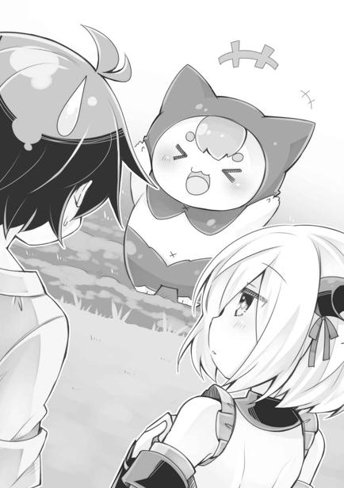
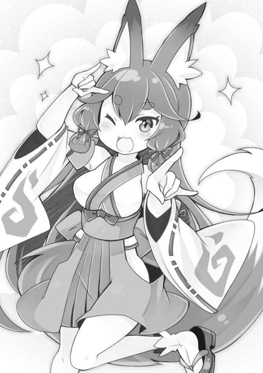
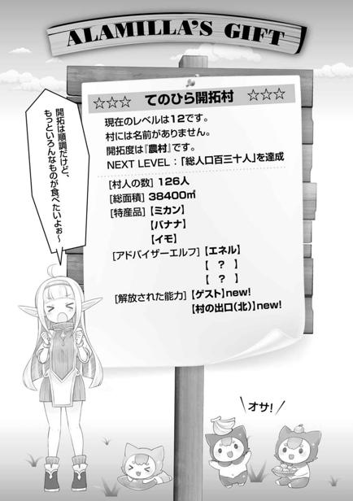

第二章
「そういえばこの世界のビーチは初めてだな！」
サクサクとした柔らかい砂の感触に、空元気な感想を漏らす。
前世は病弱少年だったから、海で遊んだ経験はほとんどない。人っ子一人いないビーチを独り占め。これがレジャーだったら……いや、どっちにしろ孤独すぎるか。
しかし、せっかく異世界生活も軌道に乗ってきたというのに、いきなりの島流しとは。
「……どうすんだよ、これ」
理解が追いついてこないが、しかし、いつまでもそうしていても仕方がない。
見える範囲での話だが、島はほとんどが十数メートルはありそうな断崖絶壁で海と隔てられていて、近くにはこの砂浜以外の出入り口はなさそうだ。砂浜から少し奥は原生林に覆われ、野生の王国といった様相。ただ、船を付けた場所は、ずっと大昔に捨てられた港という感じだったから、かつては人が住んでいたのだろう。
人の気配のない、絶海の孤島。そんな場所に、俺は置き去りにされたのだ。
「どうしよう……どうする……どうすりゃいい？ 考えろ、俺……」
これからの未来の過酷さを想像して足が震える。
いくら人生が二度目だといっても、別に前世で修羅場を潜ってきたというわけではない。助けも期待できそうもないこの状況じゃ、すぐ野垂れ死にしそうだ。
とにかく食料の確保か、いや雨風防げる場所が必要だろうか。それとも体力のあるうちにイカダを作って脱出するか？ ……いやいや、そんなもん漂流して死ぬだけだ。どこから来たのか、この島がどこにあるのかもわからないのに……。
そんなことを茹だりきった頭で考えていると、突然グゥルルルと地響きのような重低音の鳴き声が耳朶を打ち、総毛立つ。
（……なにか、いるのか？）
ここは自然を多く残した島のようだ。猛獣の一匹や二匹いてもおかしくはない。実物は見たことがないが、本で読んだモンスターってやつがいる可能性だってある。
恐怖に足がすくむ。異世界転生したといっても戦闘力があるわけじゃない。武器の修練も積んでないし、魔法だって使えない。原始的な脅威に対し、あきれるほど無力なのだ。
グゥルルルと、また鳴き声が聞こえてきた。さっきよりも音が近い。
俺は動くこともできず全身を汗で濡らしながら、ただその生物が出てこないのを祈ることしかできなかった。
だが、その祈りが通じることはなく、巨大な何かがヤブから這い出てきた。
「あ……うそだろ…………」
この時、失禁しなかった自分を褒めてやりたい。まさに蛇に睨まれたカエル、前世の言葉通りの状態だった。
林の奥から出てきたのは、巨大な獅子の頭と、そのわりには貧相な山羊のような体を持った魔物だった。太く長い尻尾が大蛇のごとく蠢いている。
「ライオン……？ いや、キマイラってやつなのか……？」
ゲームだかマンガだかで見た記憶がある。複数の動物が合体したモンスターだ。異世界には、こんな変態生物が実在するのか。
どんな見た目だろうが頭がライオンという時点で、俺の中ではライオンと変わらない。十二歳の人間の子どもとライオン。どうやったって勝ち目はない。
だが、恐怖心で体は固まってしまった一方で、ギリギリ頭は冴えていた。
キマイラがこちらに飛び掛からんと前屈みになった瞬間に、「てのひら開拓村」を発動することに成功。キマイラが飛び掛かってくるのと、視界が開拓村へと切り替わるのはほぼ同時だった。
「…………ッ！ ……あ、あっぶなかったぁ」
俺は、ヘナヘナとその場にへたり込んでしまった。本当に失禁しなかっただけ偉い。
村で過ごしている間は時間を稼ぐことができる。急に獲物がいなくなったと思えば、あのモンスターもどこかへ行ってくれるかもしれない。っていうか、どっか行ってくれなかったら時間切れで外に出された瞬間に惨殺という……。
「どっどうしたんだ、カイ。すごい汗だよ、白湯でも飲むかい？」
俺の尋常じゃない様子を見てエネルが走り寄ってきて言う。
「あ、ああ……ありがとう、もらうよ」
木製の椀になみなみと注がれた白湯を飲んで一息つく。
村の様子はいつもと変わらない。ここは外界から隔絶された世界だから、当然といえば当然だが、俺がピンチに陥ったからといってこちらに影響があるわけじゃないのだ。
（そうだ。俺にはこの能力がある。今まで育ててきた、俺だけの開拓村が）
無理矢理にでも気持ちを切り替えるしかない。
「エネル。なんか武器になるようなものってあるかな」
「武器が必要な状況なのかい？ うーん……残念だけどカイ、まだこの世界には争い自体がないんだ。肉が取れる動物もいないから狩りの概念もない。せいぜい武器になりそうなのは、村人が木を切るのに使っている石斧か、君が持ち込んだクワくらいで……」
「それじゃ、いくらなんでも気休め程度だな……」
石斧やクワでは、あの化け物は撃退できない。戦うのは無理だろう。
いちおうこの開拓村の中は安全だが、ずっと引き籠もることはスキルの制限時間のせいで不可能だ。島の中で安全な場所を探すか、それともあのキマイラを倒すかしなければ、生き延びる道はないだろう。しかし、それはどちらも難しく感じられた。
「いよいよ今度こそ詰んだかもしれない」
人ごとみたいに、つい呟いた。
こうなるのを見越してあの異端審問官は、俺をここに置き去りにしたのだろうか。だとしたら、ずいぶんと回りくどい殺し方だ。それとも、あのキマイラに定期的に与える生贄にでも選ばれたのか？ そんなに神聖なものには見えなかったけど。
どんなに考えてみたところで、答えは出ない。
「村から外の様子がわかればいいんだけど……」
「ここは隔離された世界だからね。私にも外のことは全くわからないし」
「となるとイチかバチかか……」
能力を解除して外に出た時に、モンスターがいなくなっていてくれればいいが、ダメなら詰みか。『開拓村』は連続発動自体はＯＫだが、一日の滞在時間は決まっている。そこをオーバーしたらもう発動できない。
「……どうするんだい？ カイ」
心配そうなエネルの声。スキルの中の人だけど、気にしてくれるのはありがたい。
「一時間くらい経ったら一度外に出るよ」
モンスターの脅威は全体の問題の一部でしかない。もしここが無人なら島の探索に拠点づくりとやらなければならないことは山積みだ。この時点で躓いてもいられないし、状況からしてある程度は運命に身命を委ねる必要がある。
「まあ、きっとカイなら大丈夫さ。大いなるアラミラ神の加護があるんだ」
「邪神扱いされてるみたいだけどな！」
きっかり一時間後。心を落ち着かせた俺は、クワを片手に能力を解除し外に出た。
途端に、磯の香りが漂う。ついさっきまでいた砂浜だ。急いで周囲を見渡す。
「よ……よし。いないな」
キマイラは無事にどこかへ行ったようだ。運がいいのか、それともモンスターの習性によるものか。ともかく、これで希望がつながった。
しかし、ホッとしたのもつかの間、またしてもヤブからガサガサと音がして、中から別のモンスターが飛び出してきた。キマイラよりは小さいイノシシみたいなモンスターだ。なんなんだこの島は！ モンスター天国かよ！
「くそっ！ 『てのひら──」
「こっち！」
「えっ!?」
また『開拓村』へ避難しようとしたところを、別の草むらからすごい勢いで飛び出してきた少女に腕を摑まれた。そして、少女らしからぬ力で、俺を引きずるようにヤブを分け入っていく。後ろからモンスターが追いかけてくるのを確認する余裕すらなく、一目散に丘を駆け上がる。信じられないほどの健脚だ。
喋る余裕なんて一ミリもない全力疾走をしばらく続け、浜辺からおそらく一キロほども離れた丘の上、とてつもなく巨大な樹の下まで連れていかれた。
「ハァ！ ハァ！ ハァ！ ハァ！」
地面に崩れ落ちて、呼吸を求めあえぐ。いきなりの全力疾走で心臓が破けそうだ。
いや、今はそんなことはどうでもよくて──
（人だ！ 人住んでた！）
無人島だと思い込んでいたから、素直に嬉しい。
心配そうに、しかしなぜか所在なげに立つ少女は、綺麗な白い髪をして、頭にはねじくれた角の飾りを付けている。すごく整った顔をしていて、キラキラと複雑な色に輝く瞳が神秘的だ。わずかに光沢のある滑らかな素材を使った衣服も、俺が住んでいた街では見なかった雰囲気のもの。年齢は俺と同じくらいに見える。
「……大丈夫？ ここなら……魔物、近寄れないから……」
少女はそう言い、逃げるようにどこかへ立ち去ってしまった。いろいろ訊きたい事があったのだが、こんな未開の地で暮らす子だ、見知らぬ人間に慣れていないのかもしれない。
「グゥルルゥ」
「おっと、へえ。本当に入れないのか」
追いかけてきたモンスターがすぐ近くに来ていて驚いたが、なぜか本当に大樹には近付けないようで、樹の周辺をうろうろしている。不思議と白い髪の少女には興味がないようで、モンスターはそっちを追いかけたりしない。なぜだろう。地元民は襲われないのか？
（とはいえ、命は助かった）
この巨大な樹は最高のベースキャンプになる。風は防げないが雨は凌いでくれそうだ。
モンスターは、大樹から二十メートルほどの場所をうろついている。そこまでの範囲が安全圏だということだろう。これだけあれば小屋を建てたりもできるし、さしあたりの拠点として申し分ない。
「しかし先住民がいたとはな……」
これは完全に想定外だった。言葉も通じるし、普通に可愛い子だし、モンスターに襲われない手段も何か持ってそうだ。これは案外どうにかなるかもしれない。今度会った時にいろいろ訊いてみることにしよう。
とはいえ、まずは島を調べることと、衣食住の確保が先だ。なんといっても優先すべきは食だろうが、これは『開拓村』で水も食料も手に入る。住に関しても木材が豊富に村から調達できるし、衣も麻布が村で手に入るから──
「なんだ！ 最低限だけなら、なんとかなるぞ！」
モンスターの脅威さえなければ、生きるのだけは問題ないのだ。これは開拓村様々で、もっと違う能力だったらとっくに詰んでいただろう。
「ありがとなー!! 俺は生きるぞー！」
俺は張り裂けんばかりの声で、もう姿の見えない白い髪の少女へと叫んだ。
届いたかは分からないが、半分は自分自身へ向けた言葉だった。
俺はここで生き、そしていつか絶対に脱出してやると心に誓った。
◇◆◆◆◇
まずは、自分のいる場所を確認する。
少女に連れてこられた巨大樹は幹が直径三メートル程もある大木で、この木にどうしてモンスター避けの効果があるかはわからないが、とにかくモンスターは近寄ってこなかった。最初は半信半疑でビクビクしていたが、あの後も何匹かのモンスターが同じようにしていたのを見たので、本当なのだろう。
巨大樹の生えている場所は、小高い丘の上だ。３６０度のパノラマというほどではないが、それなりに見晴らしがいい。だが、想像よりもずっと島のサイズは大きく、その全容がわかるほどではなかった。見える範囲には、人間が住んでいる形跡はなにもない。
周辺を確認した俺は『開拓村』に入り、エネルに無事を報告し、イモを食べ水を飲んだ。腹が満たされ少しずつ冷静になってくる。そういえば服は儀式用の一張羅のままだ。
これは汚すともったいないし少し動きづらいので、エネルに預かってもらい、村で作られた粗末な麻の服に着替えた。これを着ると原始人さながらだが、汚したとしても惜しみがなくていい。それに何枚も重ね着すれば、それなりに暖かい。
食料と水、換えの衣服を持って島に戻ると、日が暮れていた。
小高い丘の上にいるのだし、先住民がいるなら煮炊きの煙や、夜ならなんらかの光が見えるだろうと思ったものだが──
「なにもなし……か。あの女の子も来ないし」
俺はごろんと地面に寝転がった。一人きりの野宿は寂しいものだが、前世では入院生活が長かったので、そういう寂しさには耐性がある。色々あったが、とりあえずまだ生きている。生きてさえいれば、なんとかなるもんだ。
「しかし……結局俺はなんでこんな島に連れてこられたんだろうな……」
などと言いつつも、殺すため以外には考えづらい。
祝福の儀の時。神官も異端審問官も「アラミラ」の名は口にしなかった。それは当然、アラミラの祝福者を生まない為だろう。
そして、キマイラに襲われた時、『開拓村』がなければ俺は助からなかった。
つまり奴らにとって、俺が祝福をすでに授かっていることも、この島で生き延びていることも想定外ということになる。
（ルキアや親父は無事かな……）
ここまで問答無用に島流しを実行する奴らだ。
家族に累が及ばなければいいが、俺にできるのは祈ることだけだ。
（仮に生きてこの島を出ることができたとしても、街には帰れないか）
コッソリと戻って家族に無事を伝えるくらいはしたいところだが、敵（もう敵と言ってしまっていいだろう）の考えが不明だ。あまり楽観視もできまい。
「とにかく今は生き抜くこと……だな」
あるいは、迎え──救助が来る可能性もゼロではない。父親は神殿の高位神官だ。家では頼りないが、本当は立派な人物だということを知っている。神殿で起こった事なら、神官である親父だって事情がわかるはずだし。
（……なんて、そのへんは期待薄だろうな。世の中どうにもならない事はあるもんだ）
今回の件、大型船があらかじめ用意されていたみたいだし、神殿の一部の者の犯行という可能性はほとんどない。親父一人が抗ったところで無視されて終わりだろう。
助けは期待できない。となれば、自力で生き延びなければ……。
そのためにも、今は体を休めよう。
「寝るか……」
目を閉じれば、激動の一日目が終わる。
とにかく明日からは気持ちを切り替えてサバイバルしていこう。
翌日。
明け方の凍えるような寒さで目を覚ました俺は、速攻で『開拓村』に避難した。
「寒っむ！ 昨日の決意がいきなり崩れかける厳しさなんですけど……！」
昨晩、地べたにそのまんま眠ったからか、地面に体温を吸収されてしまって、身体が冷え切っていた。いずれ慣れるのかもしれないが、文明的じゃなさすぎる。
というか、このままじゃ普通に低体温で死ぬ。
「カイ。そろそろ来ると思っていたよ。ささ、白湯を飲みたまえ。温まるよ」
「やけに用意がいいな！ でもありがたい……！」
白湯を啜り、軽く体操して全身に熱をまわす。
「今日の夜までには、小屋……最低でもベッド作らなきゃ死ぬぞこれは」
「ベッドかい？ 今のところ製材技術も最低限だし、藁もない。落ち葉を山ほど集めればそれなりのものにはなるかな。カイの体格なら大きさもいらないしね」
「体格については、まだまだ成長期だからね？ しかし、落ち葉か」
無い物ねだりしても仕方がない。あるもので創意工夫していこう。
「じゃあ、私は材料を用意しておくから、カイはゆっくりしていてくれよ」
「助かるよ、エネル」
相変わらず俺は村人に干渉できない。前世でやった街を作るゲームみたいに、俺がプレイヤーでエネルが助手キャラみたいな位置付けなんだろうか。村人と話をしてみたりできれば面白かったんだが。
「あっ、そうだ。カイ」
村のほうへ歩きかけたエネルが振り返る。
「今、新しい環境にいるんだろう？ ならなにか新しい物が手に入るんじゃないのかい？」
「新しい物か。そうだな、上手くすれば何か見つかるかも」
実際には巨樹の下から離れられないわけだが、いずれはそれもなんとかするつもりなのだ。探索できれば島特有の植物やらなんやら手に入るに違いない。
この状況では開拓村の能力が俺の生命線。できることはやっていかなければ。
「なら、なんでもいいから持ってきてくれると助かるよ。村を大きくしていけば君の助けにもなるはずだしね」
「善処するよ」
「うん。できれば美味しいものがあると、私も嬉しい」
軽くハッハハと笑って去って行くエネル。
本来ならば孤独な状況なんだろうが、朗らかな脳内フレンズが変わらずそこにいてくれる。そのことが、どれほど救いになっているだろうか。
俺は心の中でエネルに感謝を送った。
◇◆◆◆◇
とりあえず家を作ることにしたのはいいが、ノコギリやら釘やら最低限必要な道具がなくて、作業はかなり難航した。
ただまあ、それでも難易度的にはイージーモードなのだ。
だって、本来なら食料、それも水が最優先となる状況なのだから。それが「開拓村」で最低限のものだが入手できるもんだから焦らずに済んでいる。
イモも豆もそれなりの量が収穫できているし、水は村に流れる川で手に入る。
そもそも安全圏から出ることなく材料が手に入る時点で、相当にゆるい。
本当なら家なんかを作るより、白い髪の少女が暮らしているであろう集落で助けてもらうのが良いのだろうが、モンスターが蔓延る外にむやみに出ていくわけにもいかない。
少女の服装や角の髪飾りを見た感じ、けっこう文化的な生活をしている集落があるはずなのだが……。
逆に、向こうから誰かが助けに来てくれる可能性も考えたが、現状なにもないのだし希望的観測で行動するのは危険だ。いずれにせよシェルターは必要なのだしな。
ちなみに、現在の「開拓村」のレベルはこんな感じ。
──────────────────────
☆☆☆ てのひら開拓村 ☆☆☆
金属の導入を検討してください。
家畜の導入を検討してください。
果樹の導入を検討してください。
現在のレベルは ４ です。
村には名前がありません。開拓度は『開拓集落』です。
ＮＥＸＴ ＬＥＶＥＬ ： 総人口五十人達成
──────────────────────
一年前にレベル１に到達してからはレベルアップが速かった。
だが、最近は伸び悩んでいる。
理由は、ヒントが出ているように、単純に新素材の不足だろう。
本来ならば、金属も家畜も果樹も手に入れたかった。
だけど、十二歳のガキが街中で手に入れるのは難しかったし、なによりお金がなかった。
正式に儀式を受けて神官になったら、その給料で一気にいこうと思ってたんだが──
だが、ジワジワと村らしくなってきているのだ。一年や二年での成長と考えれば、目覚ましい発展と言ってもいいレベルのはず。
いくつもの家（掘っ立て小屋だけど）が点在し、村の大部分に畑が作られている。イモと豆と麻しかないとはいえ、カロリーベースは十分。村人にも余裕が出てきたのか、麻の服の縫製レベルもなんとなく上がってきているような気もする。
相変わらず道具類は石器が中心で、あとは植物をうまく使った品だけ。そんな中でも、村人たちは、自分たちで創意工夫してジワジワと文化的な生活になっていっている……ような気がする。まあ、まだまだかなりササヤカなものだが。
「まさか石器で丸太小屋を組むようなことになるとはな……」
俺は開拓村から取り出した（エネルに言えば村で手に入る素材なら持ってきてもらえるのだ）木材と蔓を使って小屋を作成している。村人が作った小屋そのものを取り出せればよかったのだが、制限があるのかそれは無理だった。石器が取り出せただけでもラッキーというところか。
現在、開拓村で手に入る木材といえば、切って枝を払って皮を剝いただけの丸太だ。あとは、細い枝や葉っぱなど。ようするに木そのもの。
製材する技術がないんでそのまんまだが、うまく組めば小屋ぐらいなら作れる。十二歳の力では限度があるが、最低限横風が防げればいい。
「寝るところと、荷物置きと……六畳くらいのサイズで十分だけど、なにかしらの熱源が欲しいな。囲炉裏……はさすがに難しいだろうが、火鉢ならいけるか……？ テントのように狭い空間なら保温も楽だろうし……？」
囲炉裏か火鉢があれば室内に熱源ができる。それなりに暖かくなるだろうし、資材的にも問題ない。だけど、小屋のサイズそのものはそこそこ大きくしないと火事になりそうで怖い。欲を言えば、もっとちゃんとした家を作りたいが、いろいろ厳しいのが実情だ。
「おとなしく最小限にしとくか……」
結局、人ひとりが横になれる程度の、風が吹けば飛ばされそうなあばら家になった。
家を建てる場所をクワで浅く掘り、細い枝葉を敷き詰めて床とした。四本の太めの丸太を柱として立て、壁はやはり細い枝を何本も麻ヒモでつなぎ合わせて作成した。最後に壁に土を塗ったら、いちおうそれっぽくなった。天井は巨大樹があるから雨の心配はそんなにないが、一応葉っぱのたくさん付いた枝を並べて縛り付けてみた。
肝心のベッドは落ち葉を大量に敷き、その上に麻布をかぶせただけで完成。試しに寝てみたが、まあ地べたに寝るよりかは遥かにマシ……という程度。
（せめて毛皮があればな……）
開拓村に獣を導入しておかなかったことが悔やまれたが、今更どうしようもない。
本来ならば、こういう原始的住居は虫除けとして煙で燻さなきゃダメと聞いた気がするが、材料はすべて「開拓村」から持ってきたので、変な虫が湧く心配はないだろう。あの世界から取り出した物には、余計なオマケ──例えば虫やホコリなど、そういう自然の状態ならありえるものがくっついてこないからだ。
「なんとか完成か」
なんと、小屋を一つ作るだけで、もう日が暮れかけている。原始生活は生きるだけで手一杯だと聞いたことがあるが、まさにその通りなんだな。
小屋自体はまだまだこれから改良の余地があるのだろうが、最初から完璧を目指す必要はない。生き抜くことが目的なのだ。上手くやっていこう。
「やっぱ全然違うな。家サイコー」
自家製のあばら家で一泊して、また新しい朝が来た。
小屋の効果は素晴らしいもので、寒くて我慢できない程ではなくなった。
いや、寒いは寒いのだ。もっと改良するか毛皮を導入するかしたいところだ。
「さーて、今日はどうすっかなー。……ん？」
小屋の前に見慣れないものがある。
「これ……果物か？」
鮮やかなオレンジ色の、ミカンみたいな小ぶりの果実が三つ。昨日まではなかったし、もちろん、巨樹にこういった果物が実っているわけでもない。
ハッとなって周りを見回すと、あの白い髪の少女が、だいぶ離れた場所からこっちを窺っているのを発見した。
（あの娘が持ってきてくれたのか？）
試しに手を振ってみると、少女は恥ずかしいのかなんなのか、サッと木の陰に隠れてしまった。チラチラとこっちのことは気にしているようだが……。
「よその土地の人間が怖いのかな……」
それか、集落の長老に「ならんならんぞ、余所者に近寄ってはならん！」と厳しく言いつけられているのかもしれない。ありえそうな話だ。
「これ食べられるのかな……」
イモや豆だけでは栄養が偏ると思っていたのだ。新しい食材は大歓迎。
しかし、ぶっちゃけ自分都会っ子ッスからね。ちょっとしたことで腹痛くなりそう。
「────と、いうわけで、持ってきました」
「あっ！ 美味しそう！」
新しい食べ物を発見したら持ってきて欲しいと頼まれてたのもあって、開拓村に持ち込んでみた。
ひとつエネルに渡してみると、美味しそうだと躊躇も見せずに皮を剝き、ポイッと口に放り込んだ。一瞬、「毒味係」という単語が頭に浮かんだのは秘密だ。
「ふーむ。甘酸っぱくてこれはなかなか……いや、かなりイケるぞ、カイ。もう食べた？」
「まだ。じゃあ食べてみるかな……」
では実食！
「……ん。普通に美味しいぞ、これ。想定外」
生前食べてたフルーツみたいな味だ。この世界で転生してからは食べたことがない味。というか普通に柑橘系。皮があんまり厚くない甘夏みたいな。
「味が濃いよね。これは村人も喜ぶんじゃない？」
「三つしかないけど、これっぽっちで作付けできるの？」
実の中にそこそこ種が入ってるけど、それにしたって。
「そこは運かな。少なくともこの『世界』はこの果物を『発見』したよ」
「発見？」
「君が持ち込んだことで、この果物は『開拓村』の世界にも『存在するもの』になったんだよ。今までの物もそうだっただろう？」
なるほど。俺がエネルにこの果物を渡した時点で、この開拓村を含む世界が、この果物の存在する世界になったということか。作付けが行われるかどうかとは、別次元での成長要素だといえる。
「じゃあクワは？ これも持ち込んでることになってる？」
「なっている。そもそも村人が使ってるのは、そのクワを模したものだしね。鉄はまだこの村にはないけど、この世界のどこかには存在していて、村が発展すれば伝わってくる可能性だってあるんだよ」
それは夢が広がるな。とりあえず頑張れば世界そのもののレベルを、現実世界と同じところまで持ってくるのは決して不可能じゃないってことじゃないか。
あとは、俺自身の創意工夫と前世の知識を大活用すれば、さらなる発展も……？
「気付いていると思うけど、この村は君が来ている時だけ時間の流れが等倍で、離れている間は数倍の速度で時が流れているんだ。だから発展そのものは速いはずだよ」
確かに、やけに景色の移ろいが速いとは感じていた。
「じゃあ武器もそのうち調達できるように……？」
「そりゃあ長いスパンで見れば考えられるけど……うーん、現状では難しいんじゃないかな。なにせ外敵という概念自体が存在しないんだから。武器を作る必要性がない」
「我が能力ながら、なんてややこしいんだ……」
つまり、いずれ村が発展して鉄の扱いが始まったとしても、武器が作られる可能性は限りなく低いということ。結局、欲しいものは俺が伝えていくしかないのだ。だが、外敵の概念なんてどうすれば……？
「ちょっと危険ではあるけど、モンスターを村に放ってみたら？ 村は崩壊するかもしれないけど、一気にバイオレンスな世界になるよ」
「モンスターを……？ うーん……」
それはちょっとひどくないか？ 自分の能力の中の事とはいえ、躊躇してしまうな。
とはいえ、武器は欲しい。島ではモンスターが跋扈しているし、今俺自身が置かれている状況的にも、戦う力が必要になる予感がビンビンしてる。もちろん、武器があったからといって最初に出会ったキマイラみたいな大型猛獣みたいなのと戦えるとは思えない。あんなの、地球ならゾウとかサイに匹敵するレベルの脅威だろう。となると、ハンパな武器を手に入れる事の優先順位は低い。
（まあ、今のところは考えてもしかたがない）
果物の種をエネルに渡して、クワを片手に能力を解除した。
「さて、やるかな」
クワを片手に一人呟いた。
今日は開拓村でやることもないし、リスク分散の一環で島の開墾をやることにする。
現状、『開拓村』では食料──イモと豆を手に入れることができるが、完全にそれ頼りにしてしまうと、万が一能力が使えないとか、凶作とかがあった場合に（実際あるのかどうかはわからないが）マズいことになる。
「とまあ、実は畑仕事が好きなだけだったりして……」
ザックザックと、一心不乱に土を耕す。
（あの娘、ずっとこっち見てるな……）
俺のそんな作業を、白い髪の少女は遠い木陰からコッソリ覗いていた。
暇なのか、それとも俺を助けた責任みたいなものを感じているのか。
それとも、ただ単に珍しいだけなのかもしれない。十二歳の小僧が、どこからともなく材料を出してサバイバルしている様なんて。
しかし、少女は、決してそれ以上近づいてくることはないし、俺から接触しようとすると逃げてしまう。なんとかしたいのだけれど、どうしたものか。
そんな日が何日か続いた。
巨大樹の周りの畑を一通り耕し終えた俺は、「開拓村」から持ってきた種芋を植えた。
実際にこれが実るのはずっと先だろうが、悲しい話、現状ここから出る手立てがない。さすがに死ぬまでここにいるつもりもないが、できることからやっていくしかない。
白い髪の少女は俺が眠っている間にやってきて、こっそりと毎晩果物を差し入れてくれた。果物は二種類あって、最初の日に食べたミカンみたいなのと、もう一つはバナナだ。正確にはバナナに似た果物。前世のものほど甘くはないが、実がズングリと大きくて種入りだがなかなか食いでがある。俺はそのどちらも村で作付けさせてもらうことにした。
数が揃ったからか、どちらもすぐに村に広まった。種からのスタートなので、収穫にはもう少しかかるだろうが、これで食生活もグッと豊かになるだろう。
「そういえば、カイ。これのこと忘れてない？」
「ん？」
ある日の夕方、一日の仕事を終えてエネルと焼きイモを食べている時。エネルが小さな巾着袋を取り出しつつ言った。
「なんだっけそれ」
「おおっと、まさか本当に忘れているとは……。種だよ！ 種！ 創造の種！」
「あっ！ ああっ!!」
忘れてた！ そういえば初めての収穫を達成したときに、エネルから貰ったんだった。
「これは開拓村では育たないけど、そっちでなら育つはずだよ。今こそ植える時が来たんじゃないか？」
まさに植える時が来ていた。というか、なんで忘れてたんだ。
創造の種は、なにか役に立つものが生るのだという。エネルのザックリとした説明だから出たとこ勝負感は否めないが、現状を打破する力になってくれるに違いない。
すぐには実らないだろうと思いつつ、さっそく植えてみた。
っていうか、ほんと頼みます。
しかし、次の日。
「ゴホ！ ゴッホ！ ゴホゴホェ！ マジかよ！」
昨夜、創造の種への期待で胸を熱くしながら寝たわけだが、起きたら胸だけでなく全身が熱くなっていた。
（喉が痛い！ 体の節々も！ なんだかボーッとする！）
どうやら、ずっとほぼ野外での生活をしてた無理が祟ったらしい。
できる範囲で気を付けていたのだが……。
「完全に風邪ひいた……」
正直、こんなところで病気になるのは死活問題だ。医者なんているわけもなく、自然治癒に頼るにしても環境が悪すぎる。
助けが全く来ないことで、精神的にも弱気になっていたのかもしれない。
「寒い……」
自分が自分でないような感覚。体がフワフワしている。体温計がないからわからないが、かなりの高熱が出ているようだ。
前世で嫌と言うほど慣れ親しんだ「死の感触」がすぐ近くに来ているのを自覚した。
この島は比較的温暖なようだが、寒暖の差はある。とくに朝方はかなり冷え込む。麻の作業着を重ね着してなんとか乗り切ろうと頑張るも、かなり厳しい状況だ。今は昼間だからいいが、夜になったらどうなってしまうんだろう。
現状、開拓村にいられる時間は二十四時間中、三時間程度。それを超えると村から弾き出され、丸一日能力が使えなくなってしまう。
だから、できることは己の免疫力に賭けることだけだった。
こういう時に、白い髪の少女が持ってきてくれた果物はありがたかった。
あとは、水をなるべく多めに飲んで安静にしておくより他にない。
（ただの風邪ならいいけど……。変な風土病とかの可能性もあるのか……？ リアルに死ぬ可能性高いぞこれ……）
頭がボンヤリする。気がつけば外はもうすっかり夜だ。
手を伸ばせば届きそうな満天の星。煌々と輝く三つの月が島を明るく照らしている。
（寒い……）
寒さで目を瞬くと、月が消えていた。雲に隠れたのかと思ったが、違った。
逆光で輝く、白い少女の輪郭。
あの娘だ。すぐ近くまで来ているらしい。今日も果物を持ってきてくれたのだろうか。
「……死ぬの？」
少女の震える声。心配……してくれているのだろうか。
（寒い……）
俺は半ば無意識に少女に手を伸ばしていた。誰かの助けが必要だった。
少女はおずおずと俺の手を握ってくれた。
久々に感じる誰かの体温に、驚くほど心が安らぐのを感じる。
「…………あっ」
俺は朦朧とした意識の中で、その手を引き、抱き寄せた。少女の声が漏れる。
少女は俺と同じくらいの体格だが、驚くほど素直に俺の胸の中に収まった。
（あたたかい……）
耐えきれないほど寒かった。そして、少女は温かかった。
熱に浮かされた頭で思う。拒絶されたら、もう俺はこの寒さに抗えず死ぬだろう。そういう漠然とした手触りがあった。
──そして、少女は拒絶しなかった。
俺に抱きすくめられて、しかし何も言わずそのままでいてくれた。
その夜は俺は、少女の柔らかい温かさによって、驚くほど穏やかに眠ることができた。
翌朝。
俺が驚くほどスッキリと目を覚ますと、少女は逃げずにそのまま留まってくれていた。
「……あ。おはよう」
「死ななかった……ね。よかった」
「うん。君のおかげ」
さすがに一晩を共にした照れくささが出てしまう。いや、別に変なことしたわけじゃないけど、抱き合って寝ていたのだ。
「あ……あの」
少女が、うつむいて何かを言いかける。
「うん？ どうした？」
「その……あなたは、私のこと……怖くない……の？」
「え？ 怖くないけど」
「今までの子は……みんな怖がったよ……？」
今までの子？ 俺のほかにも、連れてこられた子どもがいたってことか。
不安そうな眼差しを向ける少女の姿を見る。
絹糸のような白銀の髪。こんな原生林の島では違和感が拭えないほど美しい象牙色の肌。飾りというには大きすぎる側頭部から生えた角。
（ああ……なるほど）
白い髪に白い肌。そしてなにより、その角。
ファーレー教における人類の敵「悪魔」の姿だ。神殿の宗教画にも描かれているこの「悪魔」ってのは、前世におけるお化けみたいな存在とされており、子どもには恐怖の対象になるのかもしれない。まあ、俺は見た目通りの子どもじゃないのだけど。
「うーん。むしろ可愛い」
なにげなくそう口に出すと、少女は「プキョ!?」と変な声を出して動かなくなった。
褒められ慣れてないにしても、すごい反応の仕方するな。
「だ……大丈夫？」
「────ハッ、あ……えっと。怖くない？」
「あ、うん」
「…………これでも？」
少女はひとつウンと頷くと、立ち上がり、わざわざ俺のすぐ横に座り直した。
え、なにこれ。文化？ 文化の違いなの？ 不意にパーソナルスペース詰められちゃうとドギマギするんですけど！
恥ずかしくて動けない俺を見て、何を勘違いしたのか少女は驚いた表情で口を開く。
「ほんとに……平気なんだ……。あの……私はアビス……です」
「アビス。いい名前だね。俺はカイ。カイ・ハスクバーナ」
二人で照れくさくエヘヘと笑って、自己紹介。
なかなかチャンスを摑めずにいたが、ようやく話をすることができた。そういう意味では風邪に感謝というか、不幸中の幸いだった。もう二度とひきたくはないが。
その後、アビスからいろいろな話を聞いた。
今までも何度も、俺のように船で連れられてきた少年少女がいたこと。
アビスはなんとか助けようとしたが、みんなアビスのことを怖がりながら、最後には死んでしまったのだそうだ。アビスはそんなことを何度も繰り返したらしい。
だから、最初近寄ってこなかったのだ。怖がられたくないから。
「村の大人は誰も助けてくれなかったの？」
アビスを怖がったとしても、大人たちで無理矢理助けてしまえばなんとかなりそうな気もするけれど、その質問の答えに俺は薄々感づいていた。
「村……？ 村って？」
案の定、アビスが首を傾げる。
「集落があるんじゃないのか？ アビスが住んでいるところ」
「ううん。私、ひとりだよ」
表情を変えずにアビスは言った。
（やっぱりそうだったのか……）
もう何日もこの島にいるが、一度も煮炊きの煙が上がるのを見ていないし、夜に明かりが点いているところも見ていない。
……そもそもアビス以外の人間を見ていない時点で、変だなと思っていたのだ。
「アビスも、祝福の儀式の時に連れてこられたの？」
「ぎしき？ ううん……私は違うよ。この島の生まれだから」
じゃあ、先住民ってことか。他に誰もいないってことは、それなりに事情があるのだろうが、まあ、そのへんは追い追い聞いていけばいいだろう。
（しっかし、角がモノホンだったとは）
最初、飾りだと思っていた角は、直接頭から生えている──本物の角だった。
「亜人」という人間とちょっと違うヒトが存在することは、本で読んで知ってはいたが、角が生えた亜人は本でも見た記憶がない。まあ、実際に存在しているのだから、いるってことなんだろうけど。
まあ、いずれにせよ、俺にとってはたいした問題ではないが。
「じゃあ、アビス。ひとりぼっち同士、友達になってくれる？」
俺はアビスに手を差し出した。
アビスは優しい子だ。俺の前に連れられてきた何人もの子ども全員に、同じように怖がられ、仲良くなれず、最終的には何人もの死を看取ったのだろう。
そんな中で、人との接触に臆病になるのは当然だ。それでも、アビスは俺のことを見殺しにはできなくて、手を引いて安全な場所まで連れてきてくれた。夜中に果物をくれた。病気になった自分を助けてくれた。
アビスは差し出された手をマジマジと見つめて、少し戸惑った表情を見せてから、おずおずと両手で手を握ってくれた。
「これからよろしくね。マスタ」
「マスタ？ カイだよカイ」
「いいの。カイは私のマスタなの」
どういう意味だかわからないが、いずれ教えてもらえるだろう。
それが、俺とアビスの出会いだった。
アビスは俺がまた体調を崩すのではないか心配だといい、いっしょに寝ることになったりしたが、俺の精神年齢はかなり高い。
いくらアビスが、掛け値なしの美少女で、こんな原始生活のわりに身綺麗で、髪もツヤツヤで瞳がキラキラだからって、アビスくらいの少女といっしょに寝たからといってなんということでもなかった。
ないったらない。
◇◆◆◆◇
朝。子ども二人が横になれば一杯になってしまうようなサイズの小屋で目を覚ます。
「マスタ、おはよ」
まさに鼻先が付くような距離。文字通り目の前にアビスの美しい顔があった。
いつから起きていたのか、パッチリと開いた大きな瞳には眠気の跡すらない。
「お……おはよう」
緩く抱きしめあった格好のまま、朝の挨拶を交わす。
外は明るいが、まだ朝靄に包まれている。
「……マスタ、よく眠れた？ 寒くなかった？」
まばたきもせず、真っ直ぐに俺を見つめてそんなことを言う。
「アビスのおかげでよく眠れたよ。いいお布団を手に入れたな、はっはは」
照れ隠しでついそんな言い方をしてしまう。
「……うれしい」
お布団呼ばわりしたのに、嬉しそうにはにかむアビス。
こりゃスレてない野生児ですよ！ 俺みたいな都会っ子にゃチョロすぎる！
将来、悪い男に引っかからないか心配になってしまうな。
まあ、実際アビスの存在がどれほど救いになっているかわからない。
お布団は半分冗談だが、なんだかんだ言っても、突然放り込まれた極限的な状況で、不安で寂しかったのだ。いくらエネルたちがいるとはいえ、彼女たちは能力の中の世界の住人。この島にいる間は、ひとりぼっちになってしまう。本当の本当に無人島だったら、もうとっくに心が折れていたかもしれないのだ。
「アビスがいてくれてよかった」
「私も……マスタが来てくれて……生きてくれてうれしい」
朝っぱらから、とてもホンワカしてしまった。
──こんな状況だけど、なんだかコレで良かった気がしてきた。
突然、こんな孤島に連れてこられたこと自体は俺にとって不幸なことだったが、アビスにとっては幸せなことだったんだろうし、誰かの喜びになれたのなら素直に嬉しい。
あの神殿関係者は絶対に許さないが、物事ってのは一面だけから見てもわからないもんだ。少なくとも俺は今、少しだけ幸せを感じていた。
二人でなら、この過酷な状況も乗り切れる。そういう希望が見えてきたからというのも大きかったのだと思う。
とにかく、こうして俺とアビスの共同生活が始まったのだった。
◇◆◆◆◇
「じゃあ、ここに植えるよ、アビス」
「うん、マスタ。私、お水持ってくるね」
「助かるよ」
それから数日、俺とアビスの共同生活は驚くほどうまくいっていた。
いきなりの同棲。友達とかいう段階を飛び越してしまった感アリアリだが、単純に二人になったことで作業効率は一気に上がった。簡易的すぎた小屋を、二人で寝られる程度のサイズに拡張するのも簡単だったし、畑を広げたり水やりをするのも人手があるだけで格段に楽だった。マンパワーってすごい。
風邪をひく前に植えた「創造の種」も、小さな芽を出し、順調に成長してきていた。
「なにができるのかな？ 穀類なら嬉しいんだけど」
現在の主食はイモと豆である。
確かイモや豆を主食にしてる地域は前世でもけっこうあったはあったはずだが、元日本人にはちょっとつらい。せめて小麦が欲しい。米ならベストだが、贅沢は言わない。なんならトウモロコシでもいい。そろそろ他のものを食べたい。
まあ、実際に欲しているのは味のバリエーション……というかそろそろ肉が食いたい。
そんな俺の願いを知ってか知らずか、「創造の種」から吹いた小さな芽は、数日のうちにみるみる大きくなっていった。
そして、さらに数日後には土の中に赤い頭巾をかぶった人の頭のようなものが……。
「…………ん？」
土の中に小さい子どもが実った。
子ども……妖精と言ってもいい。目を閉じているが、ちょっと可愛い感じの……。
「なぜに……なんでなんだ……」
何を言ってるのかわからないと思うが、俺もわからなかった。
基本、無表情なアビスがクスリと笑ったくらいだから相当なものだ。
朝、畑の様子を確認してみたら、土がコンモリと盛り上がり、土から頭だけ出したお子様が植わっているのだ。
「アビス……どうしよう……」
「収穫してみよ？」
「マジかよ、勇気モンだな……」
これを収穫か……。ちょっと、いやかなり怖いだろ。勇気いるよね。だって頭だけ出した子どもだよ？ 可愛いけど、想像していたものと違いすぎて頭が上手く働かない。
てか、これ……ひょっとして食料なのか？
肉が食いたいと常々思っていたから、創造の種で「食肉」が創造されたって顚末だったりするの？ グロすぎるでしょ……！
「マスタ、お肉食べたいって言ってたもんね？ 私が獲ってきてもよかったけど、これなら食べられそう？ 柔らかそうだよ？」
「いやいやいやいや、食べられませんよ、さすがにこれは」
アビスが前に食べられそうな獣を獲ってこようか？と言ってくれたことがあったが、俺はそれを断った。アビスは獣を食べるために獲ったことがないというし、こんな女の子があのモンスターどもと戦えるわけがない。
狩りは、もう少し村が発展して装備が整ったら一緒に行けばいい。
「……まあ、でも実際掘り出してみなきゃわからないか。これで首だけだったら怖いな」
赤頭巾君は眠っているように目を閉じている。食肉用にするには、いろいろ心理的なハードルが高すぎる……などと考えながら、土を掘っていく。そして、その全容が明らかになる──
「思ったより、体は小さかったね。服も着てるし、上はハダカンボだけど」
「ああ……まさかの二頭身」
コロコロとしたコビトだ、等身が低くコミカルな印象の戦士という感じである。
そう。これは戦士だ。なぜか直感がそう告げている。
見た目が戦士っぽいわけではないが、第六感というやつか。……いや、多分『祝福の能力』の一部だからだろう。このなんとなく理解できる感じは。
「…………オサ！ オサ！」
戦士（仮）がいきなり目をカッと見開いて叫んだ。
「オサ？」
「オサ！ オサ！」
可愛らしく声を上げながらピョンと立ち上がり、俺に体を擦り付けてきた。
いきなり懐かれている！ しかも、体温高くて暑苦しい！
「こんな種があるなんて、不思議……」
アビスが他人事みたいに呟く。不思議で済ませていいのか、これ。
「はい、待てだ！ 待て！ おすわり！」
なんとなく犬っぽさを感じて戦士に命令すると、「オサ！」と叫んで、素直に従った。

よくわからないが、言うことは聞くらしい。
試しにクワを持たせて畑の開墾を命じると、小さい体なのに想像を超えたパワフルさで、ワッセワッセとクワを振るうではないか。
「マスタ、新しい労働力……だね」
「つまりそういうことらしいな……」
あとで、エネルに報告してみると、「なるほど君が必要な労働力を『創造』したってわけだね」などと訳知り顔で言われた。
だがまあ、簡単な命令しか理解できないとはいえ、忠実な部下ができたといえる。
さしあたっては、畑の開墾を任せることにしよう。
◇◆◆◆◇
「さて、そろそろ島を探索しようと思うんだが」
アビスといっしょに暮らすようになって十日。俺は何度目かの提案をした。
「外は……あぶないよ？」
「それはわかってるけど」
「マスタ、必要なものなら私が探してくるから……」
「気持ちはありがたいけどさ」
「魔物もたくさんいるから……ね？」
とまあ、こんな調子で、なぜかアビスは俺に外に出て欲しくないようだ。
単純に守り切れないからと考えているのだろうか。なぜだかアビスは襲われないようだが、俺は違うから。
アビスはあまり喜怒哀楽が大きいほうじゃないが、一緒に暮らしていて、毎日楽しそうだ。アビスにとって俺は、ずっと一人きりで生活してたところにやっとできた仲間なのだ。過保護にしたいという気持ちはわからないでもない。
「じゃあ、アビスがなんでモンスターに襲われないのか、秘訣を教えてくれれば」
「そ、それは……ひみつだから……」
なぜかそこは教えてくれないのだ。モンスターの脅威さえなければ、どうにでもなるんだがなぁ……。まあ、まだ出会ったばかりだ。俺も「開拓村」のことは話したが（いまいちピンと来ていないようだった）、アラミラのことは話していない。
互いのことをもっと知るには時間が必要なのだろう。だが、今の俺にはそんな悠長なことをしている余裕はない。
「アビス。ほんのちょっと、すぐそこまででいいんだよ。戦士君だっているし、俺には能力もある」
「パッと消える能力は凄いけど、急に襲われたらあぶないし……」
「戦士君も連れてくからさ。最近はモンスターあんまり見かけないし、大丈夫だって」
とにかく、島の探索が必要だった。
アビスはけなげに食料を探して持ってきてくれるが、ずっとアビスに頼り切って生きるわけにもいかない。しかも、アビスは食材のチョイスが微妙で、なぜかフルーツばかりを持ってくるのだ。フルーツ自体はありがたいが、島にはもっといろんな資源があるはず。
アビスの話を聞いた感じでは、助けが来る可能性もないだろう。
ならば、次のことを考えて行動していくしかないのだ。
島のことを知り、島の中のいろいろな資材を手に入れれば、「開拓村」に卸せる。「開拓村」の繁栄は、即ち自分自身の生存確率を上げることにも繫がる。村のレベルアップの上限、つまり「発展」の上限はわからないが、船はおろか、飛行機の製造にまで辿り着く可能性だってある。
そういうのを抜きに開拓村のレベルを上げたいというゲーマー魂が疼くというのもあるが、今はまだレベルは４止まり。キリのいいレベル５まで上げたい。欲を言えばレベル10まで上げたいのだ。
島の資材を取ってくるのは戦士君にまかせてみるという手もあったが、モンスターに襲われた場合、丸腰の戦士君一体では到底生き残れそうもない。貴重な労働力を簡単に失うような手段を取るのははばかられた。
けれど、結界（樹の周りにモンスターが近付けないところから命名）の周りだけでなんとかしようというのも無理な話なのだ。
現状をどうにかしないと、どうにもならない。
──結局、アビスをなんとか説き伏せ、結界の外に出ることにした。
その代わり、アビスの言うことを聞くのが条件だ。まあ、俺はジャングル初心者。先輩の言うことを聞くのは当然というものだろう。
「マスタ、毒のある植物もあるから、あんまり無闇に近づいたらダメ」
「マジか。じゃあ、戦士君に行ってもらおう」
エネル曰く、人間よりも相当に頑丈らしいから、少しの毒なら大丈夫だろう。
「オサ！」
俺とアビスと戦士君の三人で、結界の外を散策していく。
意味があるかわからないが、武器として石器の斧を携行してみた。
戦士君はそれなりに大きい石斧を持てたので、案外戦闘力として期待できるかもしれない。まあ、モンスターに会わないのが一番良いのだけど。
「毒も心配だけど、虫刺されも怖いな……。そのへん、アビスは大丈夫なの？」
「私は平気。マスタは最大限警戒して」
「なんで平気なんだ……」
アビスは平気な顔して、戦士君といっしょにどんどん森の奥に入って果物なんかをゲットしてくる。野生児と言ってしまえばそれまでだが、そういう感じでもないんだよなぁ。
お風呂にだって入ってないはずなのに、いつだって髪も肌もピカピカだし、服も汚れたところを見たことがない。こっそり手入れしているのかもしれないが……。
「しかし、やっぱり前住んでた街の周りとは全然違うな」
島の植生は俺がいた街のものとはかなり違っており、よくわからない植物だらけである。
それでも、使えそうな植物は根っこごと引き抜き、回収していく。実が生っている木は枝を折って回収。持ちきれなくなったら、開拓村に入りエネルへ渡していった。
「思ったよりモンスター出ないもんだな、アビス」
「……多分、マスタの存在をみんなが知らないだけ。見つかったら襲ってくる……よ」
「そうなの？」
巨樹のところで生活してるのは目立つはずだがな。結界があるとモンスターの目からは見えなくなるのだろうか。
「そう。マスタは美味しそうだから」
アビスが不穏な言葉を口にする。
「俺、美味しそうなのか……？」
「うん。間違いない……ね」
うんまあ、人間の子どもなんて筋量も少ないし美味しいかもしれない。生きたまま食べられるのは、考えただけでゾッとするが、野生の世界ってそういうものだ。
「まあ、後は戻るだけだし、もう今日は大丈夫っぽいな」
「オサ！」
戦士君が元気よく返事してくれる。最初、意思疎通できるのか不安になったが、言葉は喋らないものの、一方的な命令はだいたい通じるから不便はない。
「オサ！ オサ！」
「ん？」
戦士君が、急にぴょんぴょんとジャンプして可愛さアピールを──違った。戦士君が指さす茂みの中から──
「マスタ！ 危ない！」
アビスが叫ぶ声が聞こえた時には、状況を認識してスキルを使用。『てのひら開拓村』と叫び、開拓村への避難を完了していた。
茂みから巨大な、丸太みたいな太さの蛇が姿を現したのだ。あのまま立っていたら、丸吞みにされていただろう。
「ビビった……。爬虫類が苦手ってこともないが、サイズが想定外過ぎる」
蛇は自分よりも大きいサイズの動物でも丸吞みにするという。あのサイズの蛇では、サイくらいの生き物でも飲み込むに違いない。俺など軽くひと飲みだ。
「どうしたんだい？ もう新しい素材はなさそう？」
事情を知らないエネルがやってくる。
エネルは島で得られた大量の新素材に狂喜乱舞し、開拓民に素材を分け与えて、なにやら指示を出すのに忙しそうだったが、まだ新しい素材は欲しいようだ。
「いや、ちょっとモンスターが飛び出してきたんで逃げてきた」
「モンスター！ 大丈夫だったのかい？」
「俺は大丈夫だったけど──」
言いかけて、ここにいるのが俺一人だということに気がつく。
アビスが蛇に丸吞みにされている姿を想像し、背中が冷たくなる。
「ごめん、エネル！ 戻るよ。なんで自分だけ逃げてきちゃってんだ俺は！」
急いでスキルを解除し、現実世界へ戻る。
自分が戻ったからといって、何がどうなるという事もないかもしれない。だが、女の子一人だけを残して（戦士君もいたが）モンスターから逃げ出すというのは、どうなんだ。
「アビス！」
現実世界に帰還し、急いでアビスを探す。
モンスターは見当たらず、近くにいた戦士君が「オサ！」と嬉しそうにする。
「アビスは……」
まさか、蛇に丸吞みされた……？
「どしたのマスタ？」
後ろから声がして振り向くと、丸吞みどころか、なんの変化も見当たらないアビスがそこにいた。
「アビス！ あのモンスターは？ 大丈夫だったのか？」
「うん。もういなくなった」
「そ……そっかぁ。よかった……」
やっぱりモンスターは心底アビスに興味がないらしい。
戦士君にも興味がないってのは、少し意外だったが、元が種だし肉食動物の琴線に触れないのかもしれない。カテゴリーとしては、野菜の仲間というか……。
「ごめんなアビス。俺だけ逃げちゃって。怖くなかった？」
「……平気。それよりマスタがちゃんと逃げてくれてよかった。マスタは死んだら終わりだもん」
「それはアビスだって同じだろ……」
もともとアビスは一人でこの島に住んでいたそうだし、モンスターに襲われないというのも真実なのだろう。だが、一人で逃げてしまったことに俺は罪悪感を感じていた。
開拓村は完全なる安全圏ではあるが、自分だけしか入れない場所でもある。
そして、入っている間、外がどうなっているのかわからないのだ。
これじゃあ待避所として最適とはいえない。
モンスターに対抗する手段は、別の道をちゃんと考えなければ。
探索を終え、帰りの道。
今日の探索そのものは大成功だったと言えるだろう。
島と一口に言ってもいろいろある中で、これだけ植生の豊かな島に捨てられたことは、不幸中の幸いというやつだったかもしれない。島そのものの面積も広いようで、まだまだ全然探索しきれていないし、未探索の箇所では、新しい素材も多く見つかるはずだ。
「……もっとちゃんと探索するには、戦闘力が必須だな」
そんな独り言をこぼしてしまう。
とにかくモンスターに対抗できなきゃ始まらない。あるいは、アビスからモンスター除けの秘密を聞き出すか……だが、アビスは教えてくれそうもない。やはり、モンスターに対抗する方法を見つけるのが現実的だろう。
戦士をもっと増やすか。武器を手に入れるか。それとも俺自身が強くなるか。
「現実的なのは、やっぱり戦士なのかな」
隣をポックポックと歩く、戦士君を見る。
体格は十二歳の俺と比べてもまだ小さい。だが、とても身軽で力も強い。
人数をそろえて、ちゃんとした武器を持たせれば、それなりの戦闘力になるだろう。
今は大きい石斧を担いでいるし、これなら相当に重い武器でも扱うことができるはず。
「戦士君の戦闘力を上げるには武器が必要だし、武器を手に入れるには開拓村を育てなきゃならない。その開拓村を育てるには島を探索して新しい素材を手に入れなきゃだけど、探索するには戦士の戦闘力を上げなきゃだし……」
堂々巡りに入り込む。このままでは何も解決できない。
それでも、今日の探索でかなり村に物を持ち込むことができたのは良かった。急激な発展とは行かないだろうが、村もそれなりにはレベルアップするだろう。
そうすれば、創造の種が貰えるだろうし、種で戦士が生まれれば戦力が増す。武器は鉄器が欲しいが、贅沢は言えない。最悪、石器でもなんとかできるよう創意工夫しないと。
そんなことを考えながら歩いていると、ふと地面に影が落ちた。
ふと顔を上げようとして──
「マスタ！」
アビスが切迫した声と共に前を歩いていた俺をドンと押した。
俺はゴロゴロと地面を転がりながら、さっきまで自分がいた場所になにか巨大な物体が地響きを立てて降り立ったのを、突き刺すような気配で悟った。
立ち上がりざま、見る。
「……マジかよ」
そこには、上空から飛来した見たこともないような巨大な鳥がいた。地面に鋭い爪を突き立て、不服そうにクゥルルと喉を鳴らしている。
もしアビスに助けられなかったら、あの爪に串刺しにされていただろう。
「マスタ！ はやく逃げて！」
鳥がギョロリとこちらに顔を向ける。
デカい鳥だ。鳥というより恐竜と言ったほうがシックリ来るかもしれない。体高だけでも三メートルはあるだろう。
クチバシも爪もやたらとデカく鋭い。攻撃を食らえばひとたまりもないだろう。
一方俺が持っている武器らしい武器といえば石斧だけ。
「マスター！」
アビスが焦ったように叫ぶ。冷静沈着なアビスにしては珍しい。
開拓村に逃げることも考えたが、空を飛ぶ相手である以上逃げるのは難しいだろう。
ここで倒す必要がある。戦うしかない！
「アビス！ とにかく結界まで走れ！ 俺と戦士君はいいから！」
巨大と言っても鳥は鳥。地上での戦闘力は決して高くないだろう。
なにせ、これだけのデカさだ。パワーは凄かろうが、動きは鈍重だ。
実際、鳥はモタモタと方向転換を始め、機敏さは感じない。だが、襲撃に失敗したから空に帰るという雰囲気でもない。人間なんてほとんど見たことがないだろうから、無抵抗な小動物だと思っているに違いない。
「戦士君は、石斧で攻撃！ 足を狙え！」
体格差的に足しか狙えないだろうが、当たればダメージは入るだろう。モンスターがどの程度痛みに耐性があるかは不明だが、やれる範囲でやるしかない。
「オサ！」
戦士君一号が跳ねるように移動して、巨鳥を攪乱しながらチクチクと足を攻撃する。
ギャッギャッ！ と耳をつんざく程の声量で鳥が鳴き、バタバタと足を叩かれるのを嫌がる。戦士君も持ち前の運動神経で、なんとか爪やクチバシによる攻撃を避けている。
「マスタッ、どうして逃げないの!? 私は大丈夫だって言ってるのに！」
「アビスや戦士君を残して逃げないさ。それに鳥が相手なら戦い方がある。大丈夫だから、アビスは逃げて」
アビスを逃がすように遠ざけ、俺は開拓村へ移動。逃げるためではなく、武器を手に入れるためだ。異世界などというファンタジー世界に来たからか、武器といえば剣や槍と思い込んでいたが、動物相手ならもっと効率が良いものがあった。
「エネル！ 火だ！ 火をくれ！ あと麻布もあるだけ！」
「なんだい、ヤブから棒に」
「魔物退治に使うんだよ！ 早く」
エネルはいつも火を焚いて、なにかしらを調理して食べているので、火はすぐ手に入った。長めの木材の先端に麻布を何重にも巻き付け、火を付ける。
「同じのたくさん用意しておいて！」
火の付いた枝を持ち、能力を解除し、恐怖心を押し殺して巨大鳥へ走る。
今は戦士君に気を取られて、ドタドタと下手なダンスみたいな攻撃を繰り出している。
俺は後ろから近づき、地面に付きそうなくらい伸びた尾羽に火を近付けた。
だが、よく動くせいか、思ったように火が点かない。
こっちにはまだ気が付いていないようだが、気を抜くと踏まれそうで怖い。こんなのに踏まれたら一発で昇天してしまう。
（くそっ！ 動くな動くなよ！）
一本目の枝は火が消えてしまった。すぐさま二本目を開拓村から持ち出す。
二本目、三本目、四本目──
「よしっ！ 点いた！」
尾羽にボウッと火が燃え移り、黒い煙を出しながら炎が大きく広がっていく。
一度火が点いてしまえば、その巨大な体に見合った大きな羽は、燃料としては抜群。
あっというまに炎に包まれ、巨大鳥はギャッギャギャッーと猛烈な鳴き声を出した。
「逃げるぞ！ 戦士君は無事かッ!?」
「オッ、オサ！」
戦士君も無傷ではなく、爪にやられたのであろう切り傷が痛々しい。
だが無事で良かった。もう巨鳥は火だるまだ。これなら逃げられる。
「走れ！」
戦士君が走り出したのを確認し、俺も逃げ出した。
後ろからは、巨鳥のすさまじい断末魔の声が聞こえてきている。
「アビス！」
アビスはまだ逃げずに、少し離れたところで呆然と立ち尽くしていた。
火を見るのが怖い……というわけでもないだろうが、様子が変だ。
だが、今は逃げなきゃ。
動けずにいるアビスの手を取り、走りだそうとした、その時──
ギャッギャギャー！とひときわ激しい叫び声が響き渡った。
思わず振り返ると、巨鳥が炎をまとった状態で、こちらに全力で向かってくるではないか。それは魔物の本能なのか、それとも狂気に駆られた行動か。
向こうのほうが歩幅が大きいぶん脚が速く、このまま逃げられるかどうかはわからない。
「とにかく逃げよう！ 追いつかれたら、また戦えばいい！」
アビスの手を引き走ろうとするが、アビスはスルッと俺の手を抜けた。
「少し…………離れててマスタ」
アビスが毅然とした態度で、一歩前に進み出る。
巨鳥は鈍重ながら、その巨体故に一歩一歩がデカい。距離は五十メートルほどしかない。逃げずにいれば、すぐに追いつかれてしまうだろう。
いくらアビスがモンスター除けの能力（？）を持ってるにしても、障害となるならば排除されてしまうだろう。
「私が、言わなきゃならない事、言えずにいたから……マスタを危ない目に遭わせた」
「な、なに言ってんだよ！ 逃げるんだって！」
だが、アビスは頑として動かず。
「……私のこと、きらいにならないでね」
小さく呟く声が聞こえた。
──ふと、どこからともなく、バチバチと電気の放電のような音が聞こえてくる。
音の発生源は……アビスだった。
アビスの体の表面がバチバチと帯電し、その光がすごい勢いで全身を駆け巡る。
光の束が何重にもなって、繭のようにアビスの体を包み込む。そのあまりの輝きに目を逸らした、次の瞬間──
「ア…………アビス…………？」
アビスがいたはずの場所に、明らかにアビスではない成熟した大人の姿があった。
黒曜石のように鈍く輝く、拗くれた角。輝く白銀の髪。熱情を静謐の中に閉じ込めたような、複雑に輝く黄金色の瞳。スラリと伸びた長い脚。メリハリのある肉感的な体。
それは、アビスであってアビスではなかった。
……まるで、アビスがあと十年も成長すればこうなるんじゃないか、そう思わせるような姿──
その女性は、こちらにチラリと振り返り寂しげに微笑んだ。
「クギャッー！」
巨鳥が出した金切り声で現実に戻ってくる。
「アビス！」
「だいじょうぶ」
アビスが少し大人びた声で答える。
そして、ちょっとそこにあるものを取ろうかってくらいの軽い動作で、右手を前に突き出した。またバチバチと体から電気が発生しスパークする。
「ほろびなさい！」
言葉と共に、アビスの右手から一条の光が放たれ、轟音と共に燃える巨鳥にぶち当たった。クチバシから入った光が、巨鳥の体を破壊しながら突き抜ける。
たった一撃で、巨鳥は完全に動きを止めた。その瞳は真っ白に濁り、光を失っている。
そして、そのまま地響きを立てその場に崩れ落ちた。
「…………ま、魔法か」
半ば呆然と呟く。
初めて見た。自らの肉体から超常の現象を起こす、奇跡の繰り手。
──つまりアビスは魔法使いだったのか。
魔法使いってのは、この世界の特級戦力である。
ほとんど遺伝によってその能力を受け継いできた連中で、平民にはほとんど存在しない。皆無と言ってもいいだろう。
特に女性の魔法使いは、文字通り唯一「魔法使い」を産める存在であるため（男性の魔法使いにはその因子がない）、全員が貴族だ。
突然のことに驚いたが、これでアビスがこの島で生き抜けていた理由がわかった。
魔法使いは祝福者とは違い、明確な攻撃能力を有する。俺も初めて見るがこれほどのものだとは思わなかった。
なぜ秘密にしていたのかは不明だが、なにか特殊な事情があるということなのだろう。
というか、魔法使いって変身するんだな。さすがの俺も知らなかったよ！
アビスは、俺に背を向けた格好のまま。何も言わずに立ち尽くしている。
その背中に声を掛けるのは、なんとなくはばかられたが、ずっとこうしていても仕方がない。
「マスター」
アビスがおもむろに振り返り云う。
その角。その顔。その服。確かに間違いなくアビスだ。
ものすごーく、いろいろ成長してるが、アビスに間違いない。
だが、さすがにこの成長ぶりには俺もドギマギしてしまう。
「マスター……あの……」
「すごいな、アビスは魔法使いだったんだな！」
言い淀むアビスに、俺は努めて明るく話しかけた。
というか、実際興奮していた。
魔法使いなんて、本の中でしか見たことがなかったし、俺自身も魔法の才能はなかった。
興奮するなというのが無理がある。
「……マスター、聞いて。私、魔法使いだけど……魔法使いじゃないの」
目を閉じて、静かに答えるアビス。
「そうなの……？」
「マスター……カイ……。私が何者でも嫌いにならないでいられる？ ずっと、そばに置いてくれる？」
アビスが一歩だけ前に出て言う。
縋るような目で真っ直ぐ俺を見つめている。風が吹いて白銀の髪が揺れる。
突然、そんなことを訊かれて、驚かなかったと言えば噓になる。
アビスとは朗らかに過ごしていたし、二人の関係に特別疑問を感じたこともなかったからだ。ひとりぼっち同士がいっしょにいることに、なんの不自然もなかった。
だけど、訊かれたなら真摯に答えてあげたかった。
「……嫌いになんて絶対にならないし、ずっとそばにいて欲しいよ」
俺はアビスの輝く黄金色の瞳を真っ直ぐ見つめて答えた。
今更なにがあろうが放り出したり嫌いになったりするはずがない。そうでなくても、アビスは命の恩人だ。アビスのために命を懸けたとしても、惜しくない。愛とか恋とかじゃなく、ただ素直にそう思う。
少しの照れくささで頭をかきながら、俺はアビスに歩み寄って、その手を取った。
「大丈夫だよ。アビスはアビスだろ」
「信じてもいいの……？」
アビスはまだなにかを不安がっていた。
「マスタ……。私……噓ついてた」
とつとつと語り出すアビス。それは確かに『秘密』だった。
「……私、人間じゃないの。私の正体は……ずっとずっと……ずぅっと昔に作られた戦闘人形。『レプリカント・アビス』それが私の本当の名前」
「レプリカント……？」
「……かつて、天才とうたわれた『アビス』という名前の魔法使いを模して作られた人造人間。魔力だけを糧に生き、無限の命を生きる道具」
悲愴な表情を浮かべ、半ば捨て鉢に告白するアビス。
「無限の命って……じゃあ、アビスはもうずっと何百年もこの島に？」
「……ううん。私が作られたのは一〇〇〇年以上前のはず……なんだけど、私が起動したのは今から五十八年前。なんで急に起動したのかは……わかんないの」
「……なるほど」
アビスが人造人間だったというなら、いろいろ合点がいく。
アビスはほとんど食べるということをしなかったし、食欲自体も薄かった。トイレに行くところも見たことないし、そもそもこんな原始生活なのに汚れ知らず過ぎた。
しかし、かつて進んだ文明があったというのは、お伽噺では聞いたことがあったけど、まさかそこまで発展していたとは。
「……あ、あのマスタ。気持ち悪くないの……？ 私……、この見た目で悪魔だって言われて……みんな死んじゃって……。本当に、私……人間じゃないし……」
どう言葉を掛けるのがいいか、人生経験が貧困な俺にはわからなかった。
だが、人生経験がないのはアビスだって同じだ。変に小細工する必要はない。ストレートでいい。俺たちは二人とも、子どもなんだから。
「アビス、ありがとな。秘密を教えてくれたことも嬉しかったし、あの魔物から助けてくれたことも嬉しかった。気持ち悪いなんて、思うはずがないだろ。……アビスは綺麗だ」
「マスタ……！」
アビスは、パァッと表情を輝かせた。
まあ、実際……元日本人の俺にとって、アンドロイド少女はほとんどご褒美以外の何ものでもないわけで、すべて本音だ。
「だから、変に気にする必要ないよ。ちょっと種族が違うくらいのもんだろ、実際……。というか、元になった人間がいるなら、ほとんど人間なんじゃないか？」
どういう製造方法をしてるのかはわからないが、アビスは実際、ほとんど人間と変わらない。むしろ良い意味で、バージョンアップした人間というか、超人というか。
「うん、体の作りそのものは人間と変わらないの。だけど、組織は全部人工のもの……私の体は、目に見えないほど小さい機械がたくさん集まってできてるの……。だから、こうして、体を急におっきくできたりするんだ」
ナノマシンとかいうやつだろうか？ ゲームだか小説だかで読んだ記憶があるな。
「……そ、それでね。私、一人では生きられないの。自分だけでは生き方がわからなくて、なにしたらいいのか全然わかんなくて……。でも……ずっと一人だったから……」
つっかえつっかえ話すアビス。
その姿は人間そのもの。例えば、アンドロイドやらオートマタの物語では、「感情」があるかないかが必ず主題に上がるものだが、アビスにはどう見ても感情がある。
確かに、感情豊かという感じではないが、感情の存在そのものは疑いようがない。
「だから、ね、私……勝手に自分で決めちゃったの。二人であの夜を越えた日に。この人に私のご主人様になってもらおうって。いっしょに生きてもらおうって」
「……だから、マスタって呼んでたのか」
「ちゃんと説明できなくて……ごめんなさい。……今からでも、遅くないなら……その……私のマスターになって……くれませんか？」
まあ正直、アビスが普通の人間だったなら微妙な話だ。普通に対等の関係でいいと思うし、そうあるべきだろう。
だが、アビスは普通どころか、人間ですらないのだ。一人では生きられないというのは、「一人で好きに生きる」という能力を持たされていないからだろう。あるいは、これから世界を知ることで、やりたいことが生まれてくるのか──いずれにせよ、そうなるまで手助けしてやらなければならない。
（ある意味、今日が一番前世の知識に助けられた場面かもしれない）
前世がなかったら、俺はアビスを怖がり遠ざけていたかもしれないし、アビスが言うこともほとんど理解できなかっただろう。祝福を与えたもう神に寄り添い生きる平均的異世界人に、「人造人間」なんて理解できるはずないもんな。
だから、俺はこう答えた。
「じゃあアビスは今日から俺のものだ！」
「はっ、はい！ ふつつかものですが、よろしくお願いします、マスタ！」
こうして、俺とアビスは主従となった。
……さすがに、いきなり「俺のもの宣言」は、ちょっと調子こきすぎたかもしれない。
◇◆◆◆◇
「オサ！」
ついアビスと話し込んでしまったからか、戦士君が声をあげた。まだ安全圏じゃないのに立ち話ってのも気が緩んでいたかもしれない。
戦士君の巨鳥との戦闘のケガが心配だったが、思ったよりも軽そうだ。というか、切り傷はあるが血は出ていない。
「オサ！ オサ！」
「ん？」
戦士君がなにかアピールしてくる──と思ったら、シュルシュルと縮小していき、種の状態にまで戻ってしまった。
「うわー！ 戦士君が死んだ！」
俺はついそう叫び、種を回収してエネルのところに相談しに行ってしまったが、エネルによると戦士君は一定以上のダメージを受けると、この状態に戻るのだそうだ。種状態はいわば休眠モードでしばらく動くことができないらしい。
なんにせよ死んだわけではないようで、ホッとした。
俺は開拓村から出て、アビスに事情を説明した。アビスも戦士君が無事と分かり安堵の表情を浮かべた。
「戦士君はしばらくすると戻るらしいし、とりあえず、あのデカブツを回収しよう」
「家まで運ぶの？」
アビスはもういつもの少女の姿に戻っている。大人の姿になるのは戦闘モードで、ずっとその姿でいるのは落ち着かないのだそうだ。特にこっちが省エネとかいうのはないらしいが、俺としても少女の姿でいてくれたほうが落ち着く。
「いや、開拓村に運ぶ」
アビスの魔法で死んだ巨大な鳥の死骸に触りながら、『てのひら開拓村』と唱え、開拓村へ移動する。
これだけの量の動物性タンパク質は初入荷だ。街に住んでいた頃は、エネルのオヤツになる程度の肉しか持ち込んだことなかったし。
肉以外にも、クチバシやら爪やら使えそうな素材も多い。羽根がほとんど燃え尽きてしまったのは少し残念だが。
「パンパカパーン！ カイ、おめでとう！ レベルアップです！」
開拓村に入ったと同時に、エネルが大げさに両手を挙げて歓声を上げながらやってきた。
一番最初のレベルアップの時は、どこからか声が聞こえてレベルアップを伝えてきたが、エネルが来てからは彼女が教えてくれるようになった。
「これで、やっとレベル５だね。五の倍数が一つの山だから」
「やっぱなんかあるのか？」
「正式に『開拓村』になるよ。今までは、せいぜい集落だったけど、これからは最低限だけど村ってことになる」
「マジでか！」
早速、立て札を確認してみる。
──────────────────────
☆☆☆ てのひら開拓村 ☆☆☆
おめでとうございます！
ついに『開拓村』になりました！
『ゲスト』の機能が解放されます！
現在のレベルは ５ です。
村には名前がありません。開拓度は『開拓村』です。
ＮＥＸＴ ＬＥＶＥＬ ： 総人口六十人達成
──────────────────────
「エネル！『ゲスト』の機能の解放だって！ なにそれ？」
「うん。これからは村に人を連れてくることができるよ」
「人を！」
妹で試してダメだったから諦めてたが、まさかレベルアップで機能追加があるとはな。
「カイがいる間しか人は村にいられないけど、手を繫ぎながらスキルを使えば一緒に入ってこれるはずだよ。つまりお客さんだね」
「じゃあ、ちょっとアビス連れてきてみる。この鳥は素材とか食材として持ってって」
「わぁお！ 大物だね。これは御馳走だな！」
巨大な鳥に喜ぶエネルを横目に、いちど能力を解除する。
「あ、おかえりマスタ」
「ああ。ちょっと、能力のことで話がある。とりあえず家まで戻ろう」
「うん！」
小走りで家がある巨樹の下まで戻る。幸運にも、その間モンスターは現れなかった。
「さて、アビスには俺の能力のこと、詳しく話してなかったね」
「うん。神様から貰った力だって聞いてたけど、それ以外は知らない」
「じゃあ、とりあえずその辺から話すよ」
話すといっても、それほどたいした話じゃない。祝福やアラミラの話。あとは能力である開拓村のことを話すだけだ。アビスはふんふんと聞いていたが、祝福のところで引っかかった。アビスの知る知識では「祝福」というのは存在しないらしい。しかも、魔法は誰でも才能の差こそあれ使えたはずだというのだ。
まあ、アビスの時代からは一〇〇〇年も経っているのだし、その間にいろいろあったのだろう。祝福だって、案外この一〇〇〇年の間に「発見」されたものなのかもしれない。なにせ、「神の名前」を知らなければ恩寵を授かることはできないんだからな。
「じゃあ、その開拓村？からマスタはいろいろ持ってきていたの？」
「そうだよ。そんで、さっき能力が拡張されて、俺以外の人も入れるようになったらしいからさ。アビスにも俺の村を見て貰おうかと思って」
「行けるの？ 行ってみたい！」
うきうきと楽しそうなアビス。
考えてみたら、ずっとこの島で暮らしてたアビスにしたら、初めての「外」ということになるのかもしれない。まあ、目新しいものなんて……あるか。村人もいるし、エルフのエネルもいる。
俺はアビスの手を握り、『てのひら開拓村』と唱えた。
瞬間的に視界が切り替わる。まさしく瞬間移動だ。
「ここが開拓村だよ、アビス」
握った手の感覚はそのまま。確かにいっしょに村へ移動できるようだ。
俺の隣にはアビスがいる。俺に気付いたエネルが、こっちに歩いてくる。
「……？ どうした、アビス？ 驚いて声も出ない？」
アビスからなんのリアクションもない。隣を見ると、アビスの様子がおかしい。
「……アビス？」
「あ…………マスタ…………。こ、ここ、ま……魔力が……」
アビスはそのままヘナヘナと倒れてしまった。
魔力？ 魔力がどうしたっていうんだ!?
「カイ、とりあえず一度その子は外に出したほうが良さそうだよ。この世界は、君の世界ではあるが、誰にとっても住み良い世界というわけじゃないんだ」
「エネル……。そうだな、そうする。大丈夫だといいけど」
俺はアビスの手を握り、能力を解除した。
まさか、こんなことになるとは……全く想定していなかった。
能力を解除して、ぐったりしているアビスを見ると、目をパチクリさせてそのまますぐにスックと立ち上がるではないか。
「だ、大丈夫なのか!?」
「うん……なんだろ、大丈夫。びっくりした……」
ビックリしたのはこっちだよ！ という言葉は飲み込んで、事情を訊く。
「あのね、私……人間じゃないから、食べ物から生きる力を貰うんじゃなくて、ほとんど魔力だけで動いてるの。だけど、あの場所は……魔力がほとんどないみたいで……倒れちゃった」
「今はもう平気なのか？」
「うん。別に魔力がなくても死ぬわけじゃないし、ちょっとビックリしちゃっただけというか……。わかっていれば平気だとおもう」
倒れたのは人造人間であるが故のことだったらしい。
今はもう立ち上がり元気アピールをしている。人間でいうと、突然おなかが減って動けなくなったような感じだろうか。
なんにせよ、開拓村とアビスは相性が良くないようだ。色々と見せたかったのだが残念。
◇◆◆◆◇
「お、おお……。ついに俺は肉料理を手に入れた……！」
アビスと二人のいつもの食卓。
俺の目の前には脂したたる肉の塊。アビスが倒したモンスターの肉だ。そんなの食べて大丈夫なのか不安だったが、エネルが太鼓判を押してくれたので食べてみることにしたのだ。調理法は、バナナの葉に包んで蒸し焼きにした。
「塩味も付けた……。圧倒的完璧……！」
塩は海辺の潮溜まりで強引に作った。磯の海水が溜まっている場所に、アビスの炎魔法を打ち込み水分を蒸発させて、塩だけを取り出すという力技。
すべてアビス大明神様のおかげだ。
まさか、炎の魔法があそこまでの火力を持つとは思ってなかったので、ちょっとビビったが、逆に言えば水くらい簡単に蒸発させられる火力がなきゃ、戦闘用には使えないのかもしれない。火炎放射器とかも、すごい炎吹くもんな……。
テーブルナイフもないので、肉はかぶりつきだ。そもそも肉の解体自体が石器によるものだし、かなり原始的だ。石器向きの石があったからいいけど、鉄の本格導入をしておかなかったのは、正直かなり後悔している。やはり鉄は文明の基礎なんだと痛感した。
「よし……。いただきます……！」
肉にかぶりつく。口の中に脂と旨みが広がる。久しぶりすぎて、肉ってこんな味だっけ？ という感動すらある。夢中になって、あっという間に食べきってしまった。
「……ふう、ごちそうさま」
「マスタ、美味しかった？」
アビスは俺の隣で、俺が食べているのを見守ってくれていた。
アンドロイドなアビスは、食事の必要がない。ただ、甘い物は好きなようで、フルーツはたまに食べるんだが、肉には興味がないらしい。
「美味しかったよ。魔物の肉なんて食べて大丈夫なのか、ちょっと不安ではあったけど」
開拓村のレベルが５に上がってから、一ヶ月が経過していた。
初めての結界外遠征から、俺の生活環境は激変と言ってもいい進化を遂げている。
まず、アビスのカミングアウトのおかげで、外の探索がかなり進んだ。確かな戦闘力を持った存在がいるというだけで、安心度が段違いだからだ。
毎日の採集によって、かなりの素材を開拓村に運び入れることができている。
島で手に入れた素材で作付けが始まったものは、ミカンとバナナとオリーブの三つ。
どれも有用だが、特にオリーブが手に入ったのは大きい。
この島のオリーブは綺麗なエメラルドグリーンのぷっくりとした大きめの実がなる。実自体は渋くて食べられないが（なんらかの処理をすれば食べられそうだが、やり方がわからない）、絞れば油がたくさん取れる。麻からも油は取れると思ったのだが、この世界の麻は（品種の問題なのかもしれないが）油があまり取れなかったのだ。
まあ、そりゃ異世界なんだし、完全に同じ植物ではなく、あくまで「似た植物」なんだろうから仕方ない部分だろうけど。
バナナの栽培が始まったのもよかった。バナナは食用としてもいいが、葉っぱが大きく水をはじく為に、軽い屋根材とか、食器としても使える。調理用としても、素材を蒸し焼きにするのに便利だ。
ミカンは味がとても良い。甘みと酸味が強く、食べると元気になった気がしてくる。ビタミンも豊富だろう。正直、これだけのフルーツは街に住んでいた時にも食べたことない。
たぶん、この島で手に入れたこの三品種は、もともとアビスを作った文明人が品種改良した種だろうと思う。この味の良さで原生種とは思えないからだ。どれくらいの長さ人が住んでいなかったのかはわからないが、アビスが目を覚ました五十数年前にはすでにこんな感じだったというから、大昔の文明人が滅んで（あるいは島を捨てて）から、ずっとこうなのだろう。
オリーブとミカンとバナナは、島でも栽培を開始した。
こっちはあんまり意味ないかもしれないが、どっちにしろすぐには島を脱出できないのだ。生活基盤は盤石にしておきたい。
それ以外では、海水から作った塩、貝や海藻、磯にいる小魚やカニや貝なんかの海産物。木の実や少量のハチミツ、野花、キノコ、山菜、ハーブなどを『開拓村』に入荷していた。量が少ないから、残念ながら村で作付けが行われるほどではなかったが、いずれこれらを入荷した影響も見られるようになるだろう。
「……というか、そろそろ脱出のことも考えてもいいかもな」
食後の白湯を飲みながら呟く。
「マスタ、脱出って……？」
「島から出るんだよ。もちろんアビスもいっしょに」
「出て……どうするの？」
「うーん……とりあえず、家族に無事は伝えたいかな」
ルキアにも親父にも、別れを告げられなかったから。特にルキアは、俺がいなくなってちゃんとやれているのか心配だ。お兄ちゃんっ子だったからな。
「……そっか、マスタには家族……いるんだもんね」
アビスが小さく呟く。
おっと、アビスちゃん。アンドロイドとは思えない情緒性の高さだな。
「妹と親父がいるよ。二人とも血のつながりはないんだけどね」
なんたって捨て子だったからな。
「アビスも家族だよ。ずっといっしょだって言っただろ」
「私も家族……？」
家族の定義は難しいが、もう俺は一生アビスの面倒を見ると決めていた。
俺にとってアビスがもう大切な存在になっているというのも当然あるが──
この世界で、アビスのことを理解し偏見を持たずに接することができるやつが、俺以外にどれだけいるというのだろうか。
悪魔の姿で、人造人間で、女の魔法使いで、変身だってする。食事の必要はなく、歳も取らない。
誰かといっしょに暮らせば、その特異さは隠しきれるものでもないだろう。
一人で暮らすか、理解者を得るかの二択。
そして、その理解者はさしあたり俺以外にない。
アビスは、小さく「家族……家族……」と呟いていたが、急にエヘヘと笑って抱きついてきた。
アビスは精神年齢が低めだからか、嬉しい時の感情表現がストレートだ。
……それにしても、こんな可愛い子が人造人間だってのか。
過去の文明はあまりにハイレベルすぎるぜ。
◇◆◆◆◇
島にやってきてから三ヶ月が経過した。開拓村のレベルは７にまで上がった。
さすがに、「毎日レベルアップ！」というような急激な成長はしない。
そもそも、レベル０から１に上がるのにだって、一年もかかったのだ。それを思うと、島に来てからの成長はかなり速いと言える。
巨大樹の途中の枝まで登り、島を俯瞰する。
この小高い丘に立つ巨大な樹の上からでも、島の全景はわからないほど広い。
アビスによると、島はヒョウタン型でかなりの面積があるという。今、探索が終わっているのはヒョウタンの巨大樹がある側……それも半分ちょっとだ。
「さしあたりもっとちゃんと開拓して……、あとは脱出の準備か」
島の脱出は最終目標だが、実際には超えるべきハードルが高い。
まず船を作らなければならない。イカダでも大丈夫かもしれないが、陸地までの距離が不明だ。潮の流れもわからないから、その時点で大きな賭けのようなもの。
「開拓村で船を作れるくらい文明が進めばいけるか……」
可能性はある。今、開拓村を育てる方向として「海」を作ろうと考えているのだ。
川は野焼きの実践で生まれた。海も貝殻やら魚やら運んでいれば、そのうちできるだろうと思う。海も近くにある村となれば、成長スピードもさらに上がるはず。内陸部の山奥の村よりは、海沿いのほうが発展しやすいのは歴史が証明しているのだから。
そうなれば、船の誕生も十分に期待できるのではないだろうか。
「……まあ、その場合、十年くらいはかかっちゃいそうなんだよなぁ……」
なにせ、鉄がないのだ。木造船で十分とはいえ、鉄なしでどこまでやれるものか。
製材技術だって石器頼りじゃ限度があるだろうし。
エネルの話では、鉄そのものは「開拓村を構成する世界」に存在しているとのこと。ということは、村が育てば、交易品として入ってくるかして鉄が村に導入されるはずではある。ただ、それを待っていたら、まさしく十年コースだろう。
「結局……村と島。どっちも開拓していくしかないな！」
つまりはそういうことなのだ。
どう生きていくにせよ、村のレベルアップは俺自身の生存率を上げるだろうし、島での生活がすべてのベースになることにも代わりはない。
最終的には脱出するにせよ、すぐには無理だ。それはここ三ヶ月の生活で嫌と言うほどわかってしまった。
下を見下ろせば、せっせと畑を耕す戦士君一号の姿が見える。
少し離れたところでは戦士君二号が畑に水をまいており、戦士君三号はアビスにくっついて散策に出ている。
この三ヶ月でエネルから創造の種を二つ貰っていたのだ。
俺は、それをすぐに植えた。
案外、戦士以外のものができるのかもと思ったのだが、結局戦士が実った。だから、今は戦士が全部で三体に増えている。全部戦士かよ！という気持ちも多少はあったが──
「でも、助かってる」
戦士君たちは本当によく働く。大きめの石なんかを開拓村に運ぶ時も、彼らに頼めばいいし、オリーブの原木を掘り起こした時も、彼がクワを振るってくれた。
やはり原始生活にはマンパワーは欠かせないのだ。これからの開拓を考えれば、さらに人手は必要になってくるだろう。
「……ちょっとエネルに相談してみるか」
俺は木から降り、てのひら開拓村を発動した。
「────というわけで、創造の種がもっと欲しいのだけど、なんとかなりませんか」
のんびり椅子に座ってミカンを食べていたエネルに話しかける。
「唐突だな！ それに、なんで敬語なのさ？」
「いや、へりくだったほうが種も出やすいかと思って……」
「そんな事しても出ないよ!?」
残念。だが、なんとしてでも種は出してもらいたい。
戦士の数は開拓速度に直結するからな。
「うーん、そうは言ってもね。別に私の一存で種を出したり引っ込めたりできるわけじゃないから……。わかってるだろうけど、私はただの管理人だからね」
「じゃあ、どうやったら手に入るか教えてくれれば。レベルアップすればいいの？」
「それもあるけど……やっぱり、新しい素材とか、村に新しいなにかを呼び込んでくれた時が、生まれやすいかな。こないだの種は、島の新素材をたくさん持ってきてくれたから、生まれたものだしね」
「新素材か……」
島の探索は続けている。だが、基本的には俺がアビスに護衛してもらいながらの行程となり、距離がなかなか稼げない。アビスは強いが、この島は基本的にモンスターの巣だ。複数のモンスターに囲まれたら、アビスといえど無事に済むかどうかわからない。
アビスは大丈夫だというが、俺の能力は不意打ちに弱いというのもあるし、慎重にならざるを得ない。
「今、村に必要なものは、やっぱり家畜だと思うよ。労働力にもなる大型のやつなら最高かな。牛か馬。そのあたりが手に入ったら、種五個くらい出せると思う」
「家畜か。それって、大人しい野生動物なら問題ない？ 今いるの無人島だから、家畜化された動物とか無理なんだけど」
「問題ないよ。どう扱うかは村人たちが決めるだろうから。どちらかと言えば数のほうが大事かな。一頭では村で飼う家畜として定着させるのは難しい」
「じゃあ最低でもペアっていうかツガイで見つける必要があるか」
「そうだね、そうしてくれると助かるよ！」
正直、見つかるかどうかはわからないが、これだけ広い島だ。モンスターどもだって、なんか食べて生活してるのだろうし、家畜向きの動物の一種類や二種類、いないってこともないだろう。
さっそく、明日から動物探しに出てみよう。
◇◆◆◆◇
「マスタ、私だけで探してくるよ？」
次の日。家畜探しの話を振ったら、アビスはあっけらかんとそう答えた。
……確かに、アビスだけで行けば危険は少ないだろう。下手に俺が付いていったほうが足手まといだ。アビスは戦闘力がありモンスターの捕食対象にもならない。頭の悪いモンスターは襲ってくる場合があるが、そういうのはさほど強くない。
「うーん……」
安全度でいえば、アビス単体のほうが安全だろう。それは間違いない。
だが……正直、効率が悪い。
俺が付いていけば家畜候補の動物を見つけるたびに、開拓村に送ればいいが、アビスでは見つけるたびに動物を連れて戻ってこなければならないし、家畜を生きたまま連れてくるのは大変だろう。家畜がモンスターに襲われるというパターンもある。
それに……なにより、自分自身で島を探索したい気持ちが強い。自分で見なければわからないことも多いだろうし。
「……やっぱり俺も行くよ。戦闘はアビスに任せるし、戦士君も三人いる。大丈夫だよ」
「うん。じゃあ、いっしょにいこ」
「ずいぶん簡単に折れたな」
「あっちなら、あんまり危なくないから」
「そうなの？」
アビスによると、このひょうたん島の俺が住んでいる側は多種多様なモンスターがいるが、くびれの向こう側は、なぜかあんまりモンスターがいないらしい。
「ええ、じゃあ向こう側のほうが安全なのか。ならそっちに拠点を移せば──」
「でもあっちは結界がないよ。モンスターもマスタが向こうに引っ越したら食べに来ると思う」
なるほど。上手くいかないもんだ。
「なんで向こうのほうがモンスター少ないんだ？」
「あっちは魔力が少し乱れてるから。気持ち悪くなる。モンスターもいっしょだと思う」
魔法使いならではの理由だった。
もし餌がないからみたいな理由だったら、探しに行く意味がないからな。
「アビスは向こう行っても大丈夫なのか？」
開拓村に連れてった時みたいに、倒れられても困る。
「うん。ちょっと魔力の感じ気持ち悪いけど、ぜんぜん平気だよ」
「そっか」
そんなやりとりをしてから、準備をして出かけることになった。
今はまだ早朝といっていい時間。日帰りする必要があるので、暗いうちから出発する。
アビスには最初から戦闘モードの大人の姿になって貰い、戦士君たちは全員連れていく。
かなりの距離を走らなければならないが、この世界に転生してそれなりに毎日鍛えている。ちょっとしたマラソンぐらいは楽勝だ。
「では、出発しよう！ 目標は家畜になりそうな動物！」
「おー！」
「オサオサ！」
さあ、家畜探しに出発だ！
「こうして走ってみると、けっこう気持ちいいな！」
「うん。マスタといっしょならなんでも楽しいよ」
「そっか」
未開の島を走る。島は全域がジャングルに覆われているわけではなく、草原となっている場所も多い。そういう開けた場所を走っているだけで、けっこうリフレッシュできる。
隣を併走するアビスを見る。
大人アビスは、本当にいろいろ大人だ。隣を走っていると、体のある部位が柔らかく揺れて実にけしからん。普段からあのモードだったら、どうにかなってたかもしれない。基本的にアビスは無防備だから。
「オッサ！ オッサ！ オッサ！ オッサ！」
戦士たちも甲高い声で掛け声を出しながら走っている。
島はジャングルみたいな場所もあるが、岩場もあるし、沢もある。もちろん、林になっている所もあるし、ただの草原になっているところもある。
今日は走りやすい草原を選び、休憩を挟みながらの行程なのでまだ余裕がある。
もちろん、俺もボンヤリ走っているだけじゃない。四方に目を光らせ、家畜になりそうな動物はいないか探してはいる。今のところ発見できていないけど。
「アビス！ 向こう側まで、まだかかりそうなのか？」
「まだ、これで半分くらいー！」
子どもの足とはいえ、二時間くらいは経つと思うが、これで半分……。
結界の大樹があるのが、島の端に近い場所だと考えると、端から端まで走って八時間くらいのサイズってことだろうか。想像してたより大きい。
もちろん島だし、形もいびつだろうけど……。
結局、モンスターは上手く回避しつつ走ったり歩いたりしながら四時間、「ひょうたん型の島」のくびれ部分に到着した。と言っても、くびれ部分が数十メートルしかないほど括れているわけじゃない。普通に数百メートル以上ある。ジャングルは途切れ、海にかけて草原になっており、やわらかい風が吹いている。
「なんか……思ったより、こっちはのどかな雰囲気なんだな」
「私も久しぶりに来たけど、変わってない」
ジャングルを抜けしばらく歩き平原に出た。どうやら中央部分は湿地になっているらしく、水場がいくらか見える。これならなにか動物がいるかもしれない。
「いた……！ 群れだ！」
特になんの障害もなく、家畜になりそうな動物を見つけてしまった。
水牛のように見える。全部で九頭の群れでのんびり草を食べている。
「アビス、あれわかる？ モンスターって感じではないよな？」
「うん。モンスターなら、こんなとこでノンビリしてないと思う。魔力気持ち悪いから」
「その原因もいずれは見つけたいとこだな」
まあ、今は水牛だ。角が立派なのがオスだろうか。ツガイで二頭も手に入ればいいんだが、さて……。
「ん？ これどうやって捕まえたらいいんだ？」
当然、生きたまま捕まえる必要がある。殺してしまっては意味がない。
でも、俺が丸腰で歩いて行って捕獲するのは無理がある。
戦士君でも、やつらが暴れたら取り押さえるのは難しそう。角の一撃食らいそうだし。
「アビス、雷の魔法って、小さい出力で撃つことできるのか？ 動物を昏倒できるくらいの力で」
「や、やったことない……。できる……と思うけど」
「じゃあ、頼む。とりあえず一頭だけでも気絶させられればいい」
正直に言えば、動物さえ見つければ、ガーッと捕まえて開拓村に送って終わり！ みたいに簡単に考えていた。動物ったって野生生物だ。そんな簡単なわけがないだろうに。
「じゃあやってみるね」
アビスが水牛に手のひらを向ける。距離は百メートルほどもある。
この距離で当たるとなると、アビスはスナイパーにもなれそうだ。
バシュッという音と共に、雷光が水牛へと走る。
速度的には擬似的な雷だろう。本物の雷は光の速度で、こうして目視できるものではないはず。魔法の源は魔力だというから、本質的にはエネルギー弾に属性を付与しているだけなんだと思う。ここ数ヶ月、アビスの魔法を見ていてなんとなくわかった。
アビスが放った魔法は、真っ直ぐに飛んでいき、一頭の水牛に命中した。
思ったよりも大きな音と共に、倒れる水牛。
「死んだんじゃないか、あれ」
「どうだろ……？ 加減したけど……。わかんない」
「じゃ、直接確かめるしかないか……って、おい。噓だろ！」
ブモー！と叫び、いきり立つ残った八頭の水牛たちが、砂埃を上げてこっちに向かってくるではないか。こうなっては、モンスターと大差ない。
あの巨体に体当たりされたら無事では済まないだろう。
「マスタは逃げてて。なんとか全部気絶させてみる」
「頼む！ 戦士君は逃げてろ！」
「オサ！」「オサ！」「オサ！」
戦士君たちが逃げていくのを尻目に、俺はアビスの隣にいた。
どうなるかわからないんで、ギリギリまで粘るつもりだ。いざとなったら二人で開拓村に逃げればいい。水牛が通り過ぎる間くらいならアビスも耐えられるだろう。
「んっ……！ 調整がむつかしいな」
アビスがギリギリ死なないレベルの雷撃を放つ。
放たれた電撃は、問題なく水牛に命中する。コントロールは抜群だ。
見た目からは威力がどんなもんかはわからないが、アビスが上手く調整していると信じるほかない。だが、威力を調整しながらの魔法は、連射ができない。
凄い勢いで迫り来る水牛。
「てか、迫力すげえぇ！ あと六頭！」
「んんっ……！ 二連射……！」
「あと四……！ って無理だこれ！」
仲間を倒されても、キレた水牛は止まらない。
むしろ加速して走ってくる。野生の生命力に満ち満ちたエネルギッシュな突進だ。
これ、捕獲できたとしても本当に家畜化できんのか!?
「アビス逃げるぞ！ 息止めてろ！ 『てのひら開拓村！』」
牛が眼前に迫ったタイミングで、アビスの手を摑んで開拓村へ移動する。
水牛からすると、俺とアビスがいきなり姿を消したように感じたはずだ。というか、実際消えてるのだけど。
「………………っ！」
隣には俺の言いつけ通り口を塞いで息を止めたアビス。
アビスは魔力を口から摂取してるらしく、息を止めていればけっこう平気らしい。
「ちょっと我慢してろよ……一分くらいしたら戻るから……」
「………………！」
あの水牛は多分そのまま俺たちが消えた地点に留まったりはしないだろう。もしかすると戦士君たちを追いかけ回してるかもしれないが、彼らの体力なら逃げ切れるはずだ。
「よし、解除！」
能力を解除し、あたりを見回す。近くには水牛の姿はない。上手くいったようだ。
「ぷはぁっ、はぁはぁ。マスタ、あそこ」
「ん？ おお」
残った四頭の水牛は、数百メートルほど向こう側へ走り去って行くところだった。
どうやら、突然いなくなった俺たちを探して走って行ったようだ。あるいは、いきり立ってわけがわからなくなっているのか。いずれにせよ、気絶した水牛は放置されている。
「さあ、早速回収しよう。生きてるか死んでるかは、この際どっちでもいいしな」
死んでたら残念だけど、そしたらまた来ればいい。
それより、時間を掛けすぎて日帰りプランが崩れるほうが怖い。夜にはまだまったく適応できていないからな。
水牛に触れながら能力を使い水牛を村に移していく。全部で五頭の水牛を手に入れることができた。エネルに見せたところ、ちゃんと全部生きていて四頭がメスで一頭がオスだった。理想的な配分だ。家畜として増やすことを考えれば、メスが多いほうが都合がいい。あとは無事に家畜化できればいいんだが、エネルによるとそこは問題ないだろうとのこと。
「おめでとう、カイ。村への『家畜』の導入達成だね。明日あたり来てくれれば、種を渡せると思うよ」
エネルが言う。
こういうのを依頼達成というんだろうか。なんにせよミッションコンプリートだ。
……まだ、帰りに何時間もマラソンしなきゃならないんだけどな！
◇◆◆◆◇
「ふーむ。わからん」
俺は今回新たにエネルから手に入れた計五個の創造の種を植えながら唸っていた。
エネルの話では、この種から生まれたものが、同一のものなら、繁殖ができるはずだというのだ。しかし、やつらは残念ながら全部オスに見える。
じゃあ、メスの戦士が生まれるのかと、「メス出ろメス出ろ」と祈ったりなんだりしてみたが、出てきた実はいつものちっさい頭巾戦士だった。
「まあ、いいか……」
総勢八名にまで増えた戦士を見て思う。これでちょっとした小隊規模にはなった。
ちゃんとした武器を持たせれば、キマイラぐらいになら勝てそうだ。
繁殖に成功すれば、さらに戦力を増強できるのだが、現状雲を摑むような話である。
「戦士君たち」
「オサ！」「オサ！」「オサ！」「オサ！」「オサ！」「オサ！」「オサ！」「オサ！」
元気に返事をする戦士一号から八号。
みんな鳴き声？が同じだ。オサってどういう意味なんだか……。
「君たちに繁殖の許可を出します。大いに増えるといい」
「オサ？」「オサ？」「オサ？」「オサ？」「オサ？」「オサ？」「オサ？」「オサ？」
顔を見合わせる戦士たち。ダメだこりゃ。
しかし、繁殖か。動物だとしたら、まあアレだけど、植物ならなんだろう。いや、植物だとしても、おしべとめしべがどうのこうので増えるのだろうか。わからない。
まあ、なるようになるだろ。
きっと発情期とか、そういうのがあるに違いない。うん。
その日の夜。
〈ザッシュ ザッシュ ザッシュ〉
「オ………………オオ…………」
〈ザッシュ ザッシュ ザッシュ〉
「オ……オッサ…………」
いつものようにアビスと一緒に寝ていると、なにやら物音がする。
（なんだ……？ モンスター？ 野生動物？）
野生の小動物が夜な夜な近寄ってくることは、今までにもあった。
だが、今回はなにか様子がおかしい。
鳴き声と共に、土を掘り返すような音が聞こえてくる。
「マスタ、眠れないの？」
「起こしちゃったか。いや、なんか聞こえるだろ。なんだろう……？」
「オ…………オサ……」
やっぱ聞こえる。妙な鳴き声が……。
「ちょっと出てみよう。静かに……」
アビスと小屋を抜け出し、月明かりだけを頼りに周囲を窺う。
結界範囲内は、モンスターこそ入れないが野生動物は入り放題だ。今では、畑ではイモが順調に育ってきているし、オリーブとバナナ、ミカンの木も植えてある。たぶん、なにかがイモを荒しに来たのだろう。モンスターってことはないはずだが……。
「マスタ、なにか動いてる」
やはり畑のほうだ。ずんぐりむっくりとした何かが……。
俺は目を凝らした。
「オサ……オサ……」
戦士君が数体。月明かりに照らされて、そのシルエットが浮かび上がる。
「んん……？ 自ら土に植わっているのか……？」
どうやら、戦士たちは体がすっぽり入るサイズの穴を掘り、そこに埋まっているようだ。
戦士たちはそれぞれ穴を掘り埋まってから静かになった。普段寝る時は、その辺でゴロゴロ寝てたはずだから、なにか特殊な儀式みたいなものだろうか。
「アビス……なんだと思う……？」
「えっ、わかんない……。でも今日みたいな満月の夜は魔力が活性化されるから、それが関係あるのかも」
結局、よくわからない。まあ、明日になればなにかわかるかもしれない。
俺はアビスを連れ、気付かれないようベッドに戻った。
次の日の朝。
昨晩、戦士たちが埋まっていた場所を見てみると、見たことのある植物の芽がピョコピョコと顔を出していた。水を与えて様子を見ていると、数日後に待望のベイビー──というか、普通に戦士君が実ったのだった。
まさか、ああいう増え方をするとは意外だったが、土の中に種でも植え付けているのかもしれない。
そんなこんなで、戦士はジワジワと増えていった。
鉄製の武器は相変わらず存在しないが、戦いは考えよう。
投石や、木製の武器、ロープ代わりの蔓なんかでも案外戦える。また、人数が揃っていれば、それだけでモンスターや野生動物に対しての威嚇効果が期待できる。
あとは単純に労働力としても、戦士君はサバイバル生活に欠かせない存在だ。戦士君自身が自家繁殖できるとわかった事で、また一つ前に進むことができそうである。
◇◆◆◆◇
開拓村のほうは、無事に水牛が家畜化された。
村の面積もずいぶん広くなったと感じる。まあそりゃあそうだ。箱庭的なものとはいえ、家の庭みたいな感覚とは違う。
なんとなく開拓村を歩き見て回る。
水牛が原始的な鋤で畑を掘り返していたり、畑のわきには肥だめが異臭を放っていたりする、なんとか『村』と呼称できるかという程度の集落だ。村人の手によって栽培されているのは、イモに豆にオリーブにミカンにバナナに麻。
ここが能力の中の世界でなく現実ならば、同じものばかりを同じ土地で育てるのは土地の栄養が偏りＮＧとなるだろうが、ここではあまり関係がないらしい。
村に建つ家屋は、ほとんどが原始的な大勢で住むことができる小屋。
気候の変動がほとんどないこの村では、そこまで寒さの対策をする必要がないからか、簡素な小屋に村人たちは集団で住んでいる。おそらく、一家族？で二十名ほどだろう。子どももおり、人種は俺と同じような外見である。
村人からは俺の姿が見えていないので、好き勝手に見て回る。
喋っている言葉は、なんと日本語だ。というか、エネルが喋っているのも日本語だし、この世界では日本語が公用語なのだろう。
ちょうど昼時だったらしく、村人たちがバナナの葉の上に食材を並べて食事を始めた。
蒸したイモと豆とバナナを一緒に煮たものに、デザートとしてミカン。
まだ家畜である水牛を潰して食べるというところまでは、進んでいないようだ。牛乳もまだ見かけない。牛乳の生産が始まれば食品のバリエーションは大幅に広がるだろうが、加工食品はまだ難しいかもしれない。チーズの作り方などは俺が手助けしたほうがいいだろう。チーズが自然発生するのを待つのは時間が惜しいし、俺だって食べたい。
もう少し時間が経ったら、食肉も乳製品も普通に手に入るように成長してくれよ……と、村人たちの食事風景を見ながら願う。
というか、村人たちの食事事情が、俺の現在のそれと全く一緒で思わず笑ってしまった。
まさに、村の発展が俺自身の生活レベルと一致しているというわけだ。
◇◆◆◆◇
春先にこの島に連れてこられ、暑い夏を越え、実りの秋に感謝し、厳しい冬をなんとか乗り越え、また春がやってきた。
「一年……か。長いようで短かったな……」
この一年間。開拓村と島の開拓と。できる限りのことをやってきた。
まず冬を越えられたのは、実はけっこうギリギリだった。このあたりには雪は降らないとアビスに聞いて知ってはいたが、それでも気温は下がる。寒いのは苦手だ。
生活環境の改善は急務だった。
囲炉裏のある防寒力の高い家に、毛皮を主体とした衣類。
食べるものに関しては冬だろうがなんだろうが、開拓村で手に入る。
囲炉裏のある家も、戦士軍団のマンパワーで案外簡単に組み上がってしまった。
問題となったのは毛皮で、皮をなめして『革』にする知識を俺が断片的にしか持っていなかった為、ちゃんとした毛皮を村から入手できるようになるまでに時間がかかった。
そろそろ冬の到来が見えるような時期になって、やっとゴワゴワの毛皮をエネルが持ってきてくれたほどだ。革は油と植物の皮を使って村人たちがなめしたとのこと。もっと文明が発達すれば、毛皮の質も良くなるのかもしれないが、贅沢は言っていられなかった。
それでも毛皮は毛皮。麻の服とは比べものにならない防寒性能で感動したものだ。
素材は水牛のものではなく、フサフサした毛のモンスターのものだ。牛の革だと、頑丈だけど、防寒向きではない。ただ、牛革はバッグや靴なんかを作るのにはベストだ。
新しい時代がすぐそこまで来ているのを予感させた。
「春が来ると、こんなに心が明るくなるもんだったんだな……」
この一年を生き抜いた素直な感慨が湧いてくる。
たかが一年。されど一年だ。これで事実上、俺はこの島でのサバイバルを制したと言ってもいいだろう。一年生きられたなら十年だろうが生きられる。
「だから次の段階に進める」
俺の手には、金色に輝く『創造の種』。
つい昨日、開拓村レベルアップのご褒美でエネルから貰ったものだ。
普通の戦士が生まれる『創造の種』は、赤い種だが、今回貰った特別な種は金ぴかに輝いている、まるで黄金のような種。普通のとはオーラが段違いだ。
開拓村は総人口一〇〇名を超え、『農村』へとステップアップしていた。
立て看板はこんな感じ。
──────────────────────
☆☆☆ てのひら開拓村 ☆☆☆
おめでとうございます！
開拓村が『農村』になりました！
『村の出口（北）』の機能が解放されます！
現在のレベルは 10 です。
村には名前がありません。開拓度は『農村』です。
ＮＥＸＴ ＬＥＶＥＬ ： 総人口百十人達成
──────────────────────
村の出口（北）という機能。
この謎の機能が次のステップ……つまり島からの脱出を決意させる最大の理由となった。
開拓村はその四方を柵に覆われている。
そして、東西南北に一カ所ずつ出入り口として、柵に切れ目があり、俺も現実世界に戻ってくるのに、そこから外に出たりしている。
さて今回の新機能。今まではその柵のどこから外に出ても「開拓村」を発動した地点に戻ってくるだけだったのだが、なんと「出てくる場所を指定できるようになった」のだ。
エネルから貰った「北」と書かれた杭を現実世界のどこかに突き刺すと、そこが「出口」になる。つまり、事実上のワープポイントなのである。
もし、村から脱出しようとして失敗して外洋で漂流してしまうような事になっても、開拓村経由で一発で島まで戻ってこられてしまうということだ。
しかも、アビスも戦士君も全員連れての移動も可能。
開拓村それ自体も凄い能力だが、このワープ機能だけでもスーパーチート……。
さらに、この能力、北と指定してるということは、最終的に東西南北全部ワープポイント設定できるようになる可能性が高い。そうなったら世界中のあらゆる場所に行き来できるようになる。今は指定できるのが一箇所だから一方通行だけど、二箇所出口を設定できるようになれば、遠く離れた場所へも行き来できるようになるということなのだ。
「家族に会うの……半分くらい諦めてたけど、これなら実現可能かもしれないな……」
実家に戻ることさえできれば、家の中に杭を一本打っておけば秘密裏に通うなんてテクニックも可能になってくるだろう。
「ま、とりあえずは種か……。一番いい畑に植えてみよう」
金色の種を畑に植えて、水をかける。
この種も「創造の種」だというからには、戦士と同じようなものが実るのだろう。
（……戦士以外の職種がいいな）
戦士がいるからには、他の職種も当然ありえるだろう。魔法使いか、僧侶がいいな。
数日後。
すでに芽を出してスクスクと順調に成長していた金色の種を植えた場所を確認してみると──
「耳だ……」
耳が生えている。キツネみたいなピンと立った大きめの耳が。
「どう思う、アビス」
「収穫してみよ？」
「マジかよ、勇気モンだな……」
もうちょっと様子見たほうがいいんじゃないかな。せめて頭が出てくるまで。
うん。そうしよう。普通の種よりも時間掛かるんだよ！
というか、まさか獣が実るとはな。法則がさっぱりわからない。
だが、創造の種から実ったのだから、俺にとっては必要なものなのだろう。
────そして。
「もう四日目だけど変わらないじゃん！」
頭が出てきてから収穫しようと思って様子を見ていたが、一向に頭は出てこなかった。
つまりこの状態で収穫するしかないってことか。あんまり土の中で眠らせておくのも可哀想だし、掘り出してみるかな……。まだ形になってなかったら、戻せばいいし……。
表面の土を払うようにして、頭を露出させていく。
「ん？ 髪の毛だ」
燃えるような赤い髪。これはもしや……？
掘り進めていくと、顔が見えた。女の子だ。すると、女の子は突然カッと目を見開いた。
こんな生き埋め状態で覚醒した！ と思った次の瞬間──
右腕、左腕と順番に腕を出す。生き埋め状態から腕を出すとなると、見た目から想像するより力持ちだ。そして、自力でグイグイと土から這い出してくる。
ちょっとしたゾンビ映画みたいな光景だが、出てくる女の子は実に雅な姿をしていた。
「和服じゃん……」
もともと戦士君だって、服着た状態で生まれてきたし服着てるのは当然かもだけれど、それにしたって和服は驚きだ。
土の中から出てきたキツネ耳の女の子は、クルッと後ろを向いて犬みたいにブルブルブルーっと体を震わせて土を落とした。燃えるような輝きをたたえた赤髪が躍る。デカくてフッサフサの尻尾がピンと逆立つ。
そして、またこっちにクルリと振り返り口を開いた。
「産まれて飛び出てジャジャジャジャーン！ 獄炎の大魔導士わたくしちゃんが爆誕だー！ はじめましてマイロード！ ふつつかものですが、よろしくね！」
キュピーン！ と効果音が出そうなポーズまで取って抜かりがない少女に、俺もつい真顔で「あっはい」とか言ってしまう。

まさかというか、さすがというか……。金色の種からは、戦士とは比べものにならない、知性のある『魔導師』が生まれたのだった。
これなら、完全なコミュニケーションも可能だろう。本人のキャラはいささか強烈だが。
「あのあの！」
つい呆気にとられていると、獄炎の大魔導師わたくしちゃん（仮）がぐいぐいと服の袖を引っ張ってきた。
「マイロード！ 名前！ わたくしちゃん、可愛い名前が欲しいんですけど！」
「あ、ああ名前ね。うん。わたくしちゃんが名前じゃなかったんだな」
「わたくしちゃんは、わたくしちゃんの一人称ですよ！」
名前か……困ったな。女の子の名前を付けるなんて、想定していなかった。戦士君たちは、もう一号二号と呼んじゃってるし、魔導師一号とかじゃ……ダメだろうな。
うーん……。名前……俺の名前がカイだから……。
──そういえば、親父に拾われた頃。
俺とルキアは親父に名前を付けてもらったわけだが、俺の名前「カイ」の発音が日本語の「アイ」に似ていて、俺はずっと自分の名前は「アイ」なのだと勘違いしていた。
ある程度、大きくなって名前の綴りを覚えてアイではなくカイなんだと知ったんだが、アイなんて名前じゃ、日本なら「愛」だな、女の子みたい……なんて考えたっけ。
「愛……。恋……。ああ、恋か。獄炎の大魔導師ちゃんの名前は『恋』にしよう」
服装も和服だし、やはり日本語で書ける名前がいい。レンならシンプルだしな。
ま、生前も今も恋とか縁がないんだけどね！
「レン！ それがわたくしちゃんの名前？」
「そうだよレン。俺はカイ。こっちはアビス。これからよろしくな」
「わーい！ マイロードにアビス！ わたくしちゃんのことよろしくお願いします！」
「うわわ」
勢いよく抱きついてくるレン。
キツネ耳に燃えるような赤髪、美しい着物を着て、体付きも身長からすると大人っぽいが、文字通り産まれたてなのだ。さしずめ俺は父親か。
「レンは炎の魔法が使えるのか？」
「はい！ 炎のことなら任せて！ マイロードを寒くさせませんよ！」
「はは、マイロード寒がりだからな……」
その後、早速レンの魔法を見せてもらった。
魔法そのものはアビスのものを、もう結構見ていて慣れている……はずだったのだが。
レンは元気よく口から火を噴いたり、手に炎の球を作り出して投げたりしている。
「アビス、これ魔法？」
「いえ…………少なくとも私が知る魔法ではない……です。なにこれ……」
まさに獄炎の大魔導師の異名は伊達じゃない。自称だけど。
「……マスタ、あの子は魔法に魔力を使っていない。どこからエネルギーを取り出しているのか……」
つまりこの世界の魔法法則から外れた意味不明な魔法ということか。腹にガソリンでも入ってるのかもしれない……。
まあ、そもそも最初の戦士君からして意味不明な存在だったのだ。
これくらいは、許容範囲というものだよ！
◇◆◆◆◇
家族が増えて、さらに生活が安定してきた。
島で安心して暮らすのに障害となっていたモンスターを、アビスと戦士、そしてレンとで連携して討伐していく。島は広いが、モンスターは食物連鎖の最上位者である（魔力を食べて生きる性質があるため、エサを食べる量は少ないが）為、数自体は少ない。
既に、ほとんどのモンスターを狩ることに成功していた。
そのおかげで、島の探索速度は大幅に上がり、島にある資源のほとんどを開拓村に卸せるようになった。
「開拓村」も「農村」にレベルアップしてから、さらに入植者も増え、島で見つけてエネルに卸した魚介類も流通し始めている。どうやら、村の近くに「海」が出現したらしい。これは目論見通りだ。
（でも、開拓村に船ができるのを待ってもいられない）
俺は、島からの脱出の準備を本格的に始めていた。
とにかく必要なのはイカダだ。もちろんちゃんとした船があったほうがいいのだが、現時点の文明レベルで作るのは無理だろう。俺にはワープができる「開拓村」があるから、とにかくイカダでもなんでも沈まないベースさえあれば船旅もなんとかなる。
イカダ作りは試行錯誤の連続だったが、結局は浮力と安定性が確保できればいいという結論に落ち着き、沢山の丸太を麻紐でつなぎ合わせたオーソドックスなものにした。
とはいえ、素材もマンパワーも十分すぎるほどあるため、イカダは案外あっさりと完成した。二度の航行テストを行い改良を施し、とりあえず簡単には転覆はしないだろうと思われるものができた。
「本当に島を出るの？」
完成したイカダを前にアビスが言う。
「そりゃ出るよ。ずっとここにいても仕方ないし。もちろん、すぐ戻れるように開拓村の出口の杭は結界のとこに一本刺してから出航するけどさ」
まあ……実際の所、すぐに定住できる地を見つけられるとも思っていない。
あるいは、安住せずに色々なところを渡り歩くのもいいかなとも思っている。悪魔の姿のアビスと、キツネ耳のレン、さらには戦士たちを連れての旅は、苦難が多いだろうが、そんなのやってみなけりゃわからないのだ。
航路に関しては、ある程度は行き当たりばったりなのだが、アビスの頭の中には一〇〇〇年前の地図が存在していて、一番近い陸地の場所がわかるというので、それに頼ることになった。
出航を次の日に決め、準備に追われている最中にそれは起きた。
「マスタ。船が来た」
「…………え？」
アビスが指さす方向を見る。
まだ遠く、黒い点にしか見えないが確かに船だ。わずかずつ、こちらへ向かってきている。少しずつシルエットがハッキリしてくる。何枚もの帆を張った大型船だ。
──ちょうど俺が連れて来られた時に乗せられたもののような。
「俺を助けに来た……なんてわけないか」
わかっていたが、つい口に出た。助けが来たなんて可能性は、もう万に一つもない。
あるのは、もう一つの可能性のほうだ。可能性というより、確信に近い。
あの日から、一年が経ったということ。
俺は、それについてわかっていながら、考えないようにしていたのだ。それに気付いてしまったら、もうこの島から出ることはできなくなる。そう、理解していたから。
「マスタ。船はこの時期にしか来ない。来ない年のほうが多いけど……」
「……ああ」
念の為、みんなを見つからないように巨樹の裏に隠す。
脱出用のイカダは反対側の浜だ。船が入ってくる港跡のほうには、なにも置いていない。俺の生存がバレるようなものは、何一つないはずだ。
そうでなくても、この島は断崖絶壁に囲まれた島。島の陸地がどうなっているのかは、上陸しなければわかりっこない。アビスの話では、この五十数年、捨てられた子ども以外の人間が島に上陸したケースは一回もないというから、上陸してくる可能性もない。
船の目的はやはりこの島のようだ。ゆっくりとしたペースで近づいてくる。
「……どうするの？ マスタ」
表情を消して俺に決断を迫るアビス。
どうするったって二択だ。船の乗組員を皆殺しにして船を強奪し、脱出するか。それとも、ただ船が去るまで手を出さず「子ども」だけ保護するか、だ。
「……私……ずっと助けられなかった。でも……今なら助けられる……よね？」
「アビス……」
「マスタが、島を出るの楽しみにしてたの……知ってるし、わかってるし……私も外の世界、見てみたいけど…………でも……」
五十数年、何人もの子どもの死を見てきたアビス。それは本人にとっても辛い記憶なのだろう。今、あの船に乗せられているであろう子どもを助けても、死んでしまった子どもたちが帰ってくるわけじゃない。だが、助けられるなら助けたい。
アビスのその優しさは、俺にとっては嬉しいことだった。
「助けるよ」
俺はアビスの頭をくしゃくしゃと撫でて言った。
というか、こうなってしまえばもう助けないなんて選択肢はない。
「みんなは隠れてな。俺だけで行ってくる」
俺はそう告げて、丘から浜への道を走り出した。
密林を越えて、船が見える距離まで近づき、様子を窺う。
ちょうど、船が港跡に着き、人が降りてくるところだった。
（俺以外の人間の姿を見るの……一年ぶりなんだよな、そういえば……）
出てきたのは俺の時と同じ。異端審問官だった。
やはりあの異端審問官は、この役目の為だけに祝福の儀式に参加しているのだ。
（やつをぶっ殺すのは多分簡単……でも、意味はないか）
ちょっとスッとするだけだ。アラミラ神についての謎を吐かせることもできるかもしれないが、どっちにしろリスキーすぎる。
それをやってしまったら、この島は放棄せざるを得なくなるしな。
（来た……！ 一人か）
別の異端審問官に連れられて、女の子が一人出てくる。
人形を二つ抱えて、あのときの俺と同じように、キョロキョロと回りを見回し、半ベソをかいて、全くわけがわからないといった様子。
（胸が痛てぇ。これが人間のすることかよ……）
客観的に見て、酷すぎる。
ほんの十二歳の子どもを、理由もなにも話さず、ただ無人島に放置する。
完全に鬼の所業だ。決して許されることじゃない。
（……それでも、今回からは助けられる、か）
子どもを置いて去ろうとする異端審問官に、女の子が追い縋る。
異端審問官は、なにかを女の子に言い含め、ドンと突き放した。女の子が尻餅をつく。
（くそっ……まだ、まだだ。まだ出ていけない）
女の子が呆然としている間に、異端審問官はサッと船に乗り込み、俺の時と同じようにさっさと出航していった。
女の子は人形を強く抱きしめ、どうやら泣いているようだ。
この浜にはもう危険な生物はいない。キマイラはもうとっくに開拓村の素材になったし、イノシシもどきも丸焼きになった。
俺は船が見えなくなるまで、ジリジリとした気分で隠れ続けた。
二十分ほど、そうしていただろうか。女の子は未だに動かず泣いている。
それとも、そこで待っていろと、あの異端審問官に言われたのかもしれない。
船が行ったのを確認してから、俺はわざとらしくガサガサと音を立てて出て行った。
女の子がビクッとして振り返る。
顔は涙でぐちゃぐちゃだが、綺麗なドレスを着ている。俺と同じパターンなら祝福の儀式の最中に連れて来られたはず。見た感じ、そこそこの家のお嬢さんだったのだろう。
「こんにちは。長旅お疲れさま」
何と声を掛けてやったらいいかわからず、微妙な感じになってしまった。
「おにいちゃん……ここ、どこ？ なんで、カエデ連れてこられちゃったの……？」
なんで……か。どう答えるべきか。
本当のことを教えてもいいし、噓を教えて希望を持たせてもいい。
だが、まだこれは予想でしかないが、彼女も俺と同じか、あるいは別の『邪神』の祝福者なのだろう。儀式用のドレスだからか、胸元が大きく開いたデザインで、『聖印』が見えている。そして、その形は俺のものと同じ形だった。
つまり彼女もアラミラの祝福者だ。
「詳しいことは、上で説明するよ。君にはしばらくこの島で生活してもらうから」
「えっ、カエデ帰れないの……？」
「それはまだわからない。だけど、今すぐには無理だよ」
絶望させないギリギリのラインで説明する。
実際、帰れないだろう。だが、家族に無事を知らせるくらいならできるかもしれない。俺がやれそうなのはそれくらいまでだ。
女の子は、名前をカエデ・エンフィールドといった。
出身地を聞いたが知らない街の名前だった。国の名前はわからないという。十二歳の少女だ、自国の名前を知らないってこともあるだろう。ただ巨大な城がそびえ立つ大きい街だという事までは聞き出せた。俺の故郷の近くには、カエデが住んでいた街に該当するような都市は存在しない。ということは、少なくともラベルダ王国や、その周辺の国ではなさそうである。ファーレー教は国を跨いだ超巨大組織だから、そういうこともあるだろう。
この島は、ファーレー教の祝福の儀式を行っているすべての国から『子捨て場』として使われている。事実としてそういうことなのだと思う。
カエデは賢い子だった。アビスやレンや戦士を見て、最初は少し怯えたが、すぐに打ち解けてくれた。自分が置かれた状況についても、思ったより理解しているようだ。
「アビス、島を出るのはとりあえずキャンセルだな」
「どうするの？」
「もう島を放棄するのはなしだ。ファーレー教の子捨てがある限りは、この島を拠点にする。さすがに、見殺しにはできねぇよ」
「マスタなら……そう言ってくれると思った」
アビスが柔らかく笑う。まあ、俺はアビスのご主人様だからな。
どういうペースで子どもがここに捨てられるかもわからないが、自分と同じ境遇で連れてこられるであろう子どもたちを、見殺しにするという選択肢はなかった。
捨てられた子どもたちの為に、ここに国を作ろう。せめて、満足に暮らしていけるだけの国を。俺の能力があれば難しいことではないはずだ。
だから、そう決めた。決めざるを得なかった。
しばらくして、カエデが落ち着いた頃、祝福の儀式を行った。
儀式なんて大げさなもんじゃないが、一生に一度のものだ。
「アラミラ！」
その名を呼び、カエデは祝福を授かった。
最初、カエデは俺と同じ「開拓村」の能力を得るのだと思っていた。
だが現実には違った。本来なら神から与えられる能力は一つきり。なのに俺とカエデは同じアラミラの祝福者でありながら、全く違う能力を得たのである。
カエデのスキルは「仮初の命」という名で、物体に仮初の命を与えるというものだった。カエデが能力を使うと、いつも胸に抱いていた二体の人形が生きているように動き出した。それどころか、言葉すら喋るではないか。ものすごい力だ。
カエデは無邪気にそれを喜んだ。カエデにとっては、家から持ってきた数少ない持ち物である人形が、友達のように動き喋るというのは、大きな慰めになるのだろう。
アラミラ神については逆に謎が深まったが、今はまだ気にしても仕方がない。
その後、しばらくはカエデといっしょに生活した。他に行くあてがない以上、この島での生活に慣れてもらわなければならない。
だが、この島を拠点として長く住むのなら、いずれにせよ生活物資は足りない。
島の外に出ずに本格的な拠点を作るのは無理だろう。手に入れたいものは限りなくある。一度「開拓村」に必要数を卸してしまえば、あとでいくらでも手に入れることができる。島を開拓する上でも、「開拓村」のレベルアップがそのまま、島の拠点作りへと繫がる。
最優先は「鉄」だ。あとは鉱物資源に、いろいろな植物の種。できれば穀類も欲しい。
これから先のことを考えると、衣食住の衣を充実させる為に「綿花」や「羊毛」なんかも手に入れておきたい。オリーブの実の処理方法や、石けんの作り方、皮のなめし方なども知識として仕入れたい。
当初の予定では一度出たらもう戻らないつもりだったが、少なくとも他に良い場所を見つけられるまでは、この島を拠点にするしかないだろう。幸い、島はそのほとんどが切り立った崖に囲まれた巨大な火山島で、少人数がコッソリ生活する分にはバレる可能性は低いはずだ。
そのまま、カエデが生活に慣れるまで、三ヶ月間を一緒に過ごした。
そして、初夏。俺はアビスと共に、まだ見ぬ街を求め、大海原へと進出したのだった。
